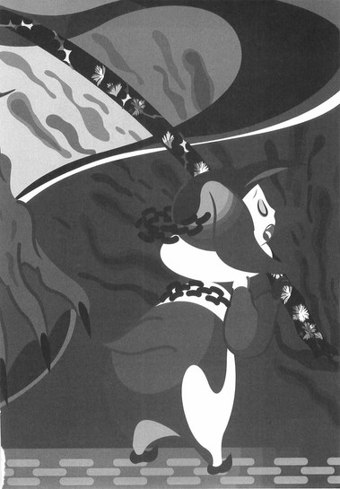

| [西尾維新] 刀語11 | |
| 西尾維新 | |
| (2015) | |
|
刀語 第十一話 毒刀・鍍
西尾維新
|
底本データ
一頁16行 一行42文字 段組１段
「ツルギ」、以後「ツルギ」に置換え注略。
「おれの父親は──親父だけだよ」
伝説の刀蒐集完了まで残り後二本!!
毒刀『鍍』を手にした真庭鳳凰は触れる
もの全てを惨殺する殺意の化身と化し、
真庭忍軍の本拠地〝新・真庭の里〟に向かう。
虚刀流・鑢七花と奇策士・とがめも、
鳳凰の刀を追い、伊賀の山中へ！
血塗れた里にひとり佇む鳳凰から告げら
れる、〝乱世〟を貫く壮大な秘密とは──!?
悲劇の〝終局〟まで待ったなし！
刀語、第十一話の対戦相手は、真庭忍軍
十二頭領がひとり、真庭鳳凰！
序章
■ ■
それは数百年も昔の話。
この世が乱世と呼ばれ、この国が戦国と呼ばれていた頃の話。
今は昔の物語。
ところは丹後。
京の都から遠く離れた山の中で、たったひとり、一心不乱に真剣を振るうひとりの若者の姿があった。
立派な体格をした若者である。
手にしている真剣のほうも、かなりの業物と見えた。
若者は無言で、ただひたすらに剣を振るう──よく見れば、そばにある木から離れて落ちてくる木の葉を、どうやら斬ろうとしているらしい。その試み自体はまるで達人のそれだが──しかし、若者はただの一枚も、木の葉を斬ることは叶わずにいるようだった。
練習、などという温い言葉では表されない。
稽古、ともまた違うだろう。
それは──修行だった。
国が乱れ、常にどこかでいくさが行なわれていたようなこの時代に──若者は己の腕を、ただひたすらに、誰も来ないような山の中で磨いていたのである。
立派な行いとも言えたが──勝手な振る舞いとも言えた。
と、そこに。
「ちょろいな」
誰も来ないような山の中で──若者に声をかける男があった。
いつの間にか。
どこからかやってきたその男は──若者の背中に、さも当然のように、まるで十年来の知己のように語り掛ける。
「まるで子供の遊びだ──よくもまあそんな腕で、剣の道を志そうとしたものよ」
「............」
若者は振り向かない。
聞こえても気付いてもいないかのように、ただ、剣を振るうのみである。
男も、振り向かない若者の態度を大して気にする風もなく、
「こう言っちゃあなんだが」
と続けた。
「小僧よ──お前には剣の才能ってもんがまったくと言っていいほどねえな。筋は悪い、型もなってない、それに......何より人を斬ろうって気概が感じられねえ」
「............」
若者は振り向かない。
「そんな木の葉っぱ、何万枚斬ったところで腕なんざ上がるわけがねえだろうが──剣の腕を上げたいんなら、まず人を斬らねえと話になんねーよ。剣ってのは人を斬るための武器なんだから。だから剣士ってのはよ──三百人斬って、それでようやく半人前だ」
もっともお前は葉っぱさえも斬れねえみたいだがな──と、男は言う。
それでも若者は無反応。
さすがに男は、鼻白んだ風に「やれやれだ」と言った。
「山奥にこもって特訓にいそしんでいる見所のある青年がいるって聞いたから、忙しい中、京くんだりまで足を伸ばして来てみたけどよ──なんだ。随分とつまんねえ小僧じゃねえか──かっ。おれも焼きが回ったかな──さすがのおれも、完成から完了へ至る道程が見えず、らしくもなく焦っちまったってことか」
「......完成から完了？」
そこで。
男がぼりぼりと頭を掻きながら、身体を反転させたところで──ようやく若者は、男の言葉に興味を持ったようで、剣を振るう手を止めて、ゆっくりと振り向いた。
そして男の姿を確認する。
そのままこんな山奥深くまで這入ってきたとはとても思えないような軽装で、しかも大した荷物も持っていないようである。
若者は手にしている真剣に、ちらりと目を落とした。
男の目的が何か知らないが──男の言葉を信じる限りにおいて、どうやら自分を訪ねてきたらしいが──それでもいざというときは、刀を持っている自分のほうが有利だ。
そのような判断をしたらしかった。
そんな若者の心中が読めたのか、
「諦めておけ、小僧」
と男は機先を制した。
「この世にあるすべての刀はおれの味方だ──いや、この世にあるすべての刀はおれの部下みたいなもんだ。お前の腕前が論外であることを差し引いても、その刀じゃ絶対におれは斬れねえよ」
「......完成から完了って言ったな？」
若者は男の言葉を無視して、言った。
強く男を睨みつけながら。
「それは一体どういう意味だ？」
「そのまんまの意味に挟まってんだろうが──まあ見たところ？完了どころか完成にも程遠い、未熟な腕前のお前には関係のない領域の話かもしれないがな？」
「おれの剣が未熟なことくらいわかってるさ」
若者は言う。
「だからこうして、一生懸命、修行に勤しんでんじゃねえかよ」
「一生懸命？ その心がけは褒められるべきだがな──しかし小僧よ。もたもたしてっと戦国が終わっちまうぜ」
「ああ？」
「山ん中に引きこもってちゃあ、世間の様相なんざ知らないだろうけどな──今となっちゃあ随分、この世はお前の知っていた頃の戦況とは変わっちまってるぜ」
「戦況なんて関係ないね」
「ほう？」
「おれは自分の腕を磨くことにしか興味がない──剣の道ってのを、究めたいだけなんだ。時代が戦国だろうが泰平だろうが、おれの歩む道筋は何も変わらない」
「かっかっか」
「何がおかしい」
「いや、本当に心がけだけは褒められたもんだと思ってよ──それに、世の中に興味がねえってとこは気に入った。無駄足だったとも思ったが......まあ、ぎりぎり合格ってとこかな？」
男は言う。
「おれも実際、世の中なんかにゃ興味はねえ──おれが相手取ってんのは、何しろ歴史って奴だからな？世の中やら世界やらなんてもんは、歴史全体から見たら、表面のほんの上澄みに過ぎねえ」
「歴史？ だと？」
若者は男の言葉に眉を顰める。
「何なんだ、あんた──さっきからおかしなことばかり言って。誇大妄想狂か何かか？」
「その表現はあながち間違っちゃいねえな──まあ大半の人間にとって、おれはそういう立場だろう。だからこそ、おれは結果で勝負しなければならないんだけどな──しかしそれでも、もう少しってところでうまくいかねえ。やっぱ素材の問題なのかねえ──こればっかりはどうしようもないな」
「素材？」
「ああ。材料がなきゃ、刀作りもどうしようもねえもんな。えっと、お前がぎりぎり合格って話だったな？いや、お前が聞きたいのは完成から完了って言葉の意味の話だったか？」
「......別に」
若者は、あまりにも要領を得ない、話せば話すほどに謎めいてくる男の言葉に嫌気が差した風に、今となっては振り向いたことさえ後悔しているという風に、首を横に振った。
「なんかどうでもよくなってきた──帰ってくれないか？おれはまだやらなきゃいけないことがあるんだよ。今日の予定の半分も消化できてねえ」
「予定ってのはその益体もない修行のことか？だから言ってやったろうがよ──所詮、人を斬らないと剣士の腕前なんか上がりようがねえってよ」
「三百人で半人前──だったか？」
同じ台詞を繰り返そうとする男に対して、若者は問う。
「まるで自分が一人前のような言い草だが......だったら、何人斬ったら一人前なんだ？」
「さてな。この現代に、一人前と言える剣士がそもそもいるのかどうか──おれの作った刀も扱いきれねえ三流どころばかりだしなあ？」
「あんたの──作った刀？」
「あれ？ 言ってなかったか？」
男は言った。
堂々と言った。
「おれはそもそも剣士じゃねえ──刀鍛冶だよ」
「か、かたなかじ？」
「元々は占い師だったんだけどな、それじゃ食っていけなくなってよ──まあ、おれのことはいいや。小僧。てめえの涙ぐましい努力が花実を咲かすよう、取り計らってやろうじゃねえか。もっとも、しっかりした根っこになれるかどうかは、お前次第だがな、鑢一根──」
それは数百年も昔の話。
この世が乱世と呼ばれ、この国が戦国と呼ばれていた頃の話。
今は昔の物語。
後の虚刀流開祖、鑢一根と──この時点で既に伝説の刀鍛冶、四季崎記紀との、これがなれ初めであった。
■ ■
企画立案・奇策士とがめ。
実行役・鑢七花。
伝説の刀鍛冶、四季崎記紀の作りし完成形変体刀十二本集め──年頭より始まった刀蒐集の旅は既に終盤を通り過ぎ、最終段階に至ろうとしていた。
絶刀『鉋』蒐集完了！斬刀『鈍』蒐集完了！千刀『ツルギ』蒐集完了！
薄刀『針』蒐集完了！賊刀『鎧』蒐集完了！双刀『鎚』蒐集完了！
悪刀『鐚』蒐集完了！微刀『釵』蒐集完了！王刀『鋸』蒐集完了！
そして誠刀『銓』蒐集完了！
残る完成形変体刀は──二本！
毒刀『鍍』！
炎刀『銃』！
ここまで来たらもう言葉も前振りもなく！
対戦格刀剣花絵巻！
殺気継ぎ接ぎ時代劇！
刀語の十一巻♪
一章 粗筋
■ ■
これまでのあらすじ、今回は鑢七花視点から。
虚刀流七代目当主鑢七花。
当年とって二十四歳。
しかしこの二十四年のうち、最初の四年については、彼自身はあまり記憶していない──思い出せないのでもなく、忘れているのでもなく、そもそも詳細を憶えていない。
鑢七花にとっての人生は、丹後に属するとある無人島から始まる。
およそ二十年前──父親にして虚刀流六代目当主、鑢六枝が島流しの処分にあって、その巻き添えで、実姉の鑢七実ともども、後に不承島と呼ばれることになるその島へと、流されたのだった。
そして流されたその日より始まった。
彼の虚刀流としての修行が──戦いが。
雨の日も風の日も雪の日も嵐の日も、父親から直々に──その身体へと、叩き込まれていた。
虚刀流。
一切の刀剣を持たない無刀の剣士。
己が身体を居ながらにして一本の日本刀として極限まで磨き上げる流派──七花はその七代目当主として、無人島の中育てられることになったのだ。
先の大乱。
奥州の顔役・飛騨鷹比等が起こした、天下泰平の世に起こったほとんど唯一のいくさ──そのいくさの中で英雄と呼ばれた父親から朝も昼も夜も、教練された。
他に考えることがないほどに教練された。
だから結局、彼にとっての記憶が始まる最初の四年ののちも、彼の人生はあってないようなものだ。
ただの修行の毎日だった。
そこに人生と言えるような要素はあまりない。
人生とも言えないようなその生活には、すぐそばに天才がいたことは、一応、特筆して付け加えておくべきだろう──三つ年上の実姉、鑢七実という、化物のような天才、あるいは天才のような化物が常にいたことは、彼の人格に多大なる影響を与えているはずである。
七花が努力の人間ならば七実は才能の人間だった。
大乱の英雄・鑢六枝はその才能を恐れ、あえて次代当主に七実ではなく七花を選んだのだ──そのことを理解したときの七花の心中というものは、決して穏やかなものではなかった。
しかしそんな感情など吹き飛ばすほどの、絶対と言うにもあまりに絶対的な機能差が、七実と七花との間にはあったのだ。
そんな生活が十九年。
単調に単調に──順調に順調に、十九年続いた。
鑢七花も、鑢六枝も、鑢七実も、当然のようにそういう生活に慣れ──七花は己の父親から鍛えられるのが呼吸するよりも日常になり、六枝は己が息子を鍛えるのが呼吸するよりも日常になり、七実はそんなふたりを陰ながら見つめるのが呼吸するよりも日常になり──三人が三人とも、英雄も次代当主も天才も、次の十九年も、その次の十九年も、いつまでもこんな生活が続くのだろうと、なんとはなしに思っていた、そんな矢先。
事件は起こった。
鑢七実の才能、鑢七実の天才性が更なる進化を遂げていることに、鑢六枝が気付いたのだった──いや、そのことに六枝が気付いたのは、七花の失態だった。
天才の姉は努力家の弟には、決して己の天才性を隠そうとはしなかったのだ──それは彼女らしからぬ失態とも言えたが、しかしそもそも、まさか彼女も思っていなかったのだろう。天才だという、彼女にしてみれば『たったそれだけの理由』で──父親が娘を手にかけようとするなどと。
ある夜のことだった。
六枝は就寝中の七実を、あえて虚刀流の技を使わず、首を絞めて殺そうとした──そしてそれに気付いた七花は、実姉を助けるために実父を殺した。
虚刀流対虚刀流の戦いだった。
天才の姉はそんな際にもあくまでも手を出さず──これまでふたりの稽古を見つめていたときと同じく、その戦いを見つめていた。
見るだけだった。
しかしいかに大乱の英雄とは言え、もうそのときに全盛期を過ぎていて──当時二十三歳の鑢七花は、体格においても技量においても、既に父を凌駕していた。
だから──七花は六枝を殺し得た。
かような、尋常ならざる流れではあったけれど、父親・鑢六枝の落命により、鑢七花はこのとき、虚刀流七代目当主の座を襲名したのだった。
家族三人による無人島生活は、それからは姉弟ふたりによる無人島生活となった。
実際、『罪人』として流された鑢六枝本人が死んでしまった以上、七花と七実がその島に滞在し続ける意味はまったくなかったのだけれど──ふたりはそれぞれに、父親同様、不承島に骨を埋める覚悟を決めていた。
特に七花は──虚刀流の名と共に滅びることを選ぼうと思っていた。
彼にはそれ以外、何もなかったから。
父のような戦歴も、姉のような天才性も持たない彼には──虚刀流しかなかったからだ。
「七花、私はね」
いつだったか、姉の七実はそんな風に言った。
「心底、ばかばかしいと思っているのよ──無駄な努力というものを。努力そのものは尊敬している──当たり前に努力ができるお父さんやあなたのことを、生まれつき尊敬しているわ。だけどね、それだけに努力の無駄遣いは、見ていてとても我慢できないのよ」
それに対して七花はこう答えた。
珍しく反抗的な口調だったかもしれない。
「努力の無駄遣いって。それを言うなら、姉ちゃんは才能の無駄遣いをしているんだろう？」
そして転機は更に一年後に訪れた。
一年後の睦月。
不承島──地図にさえ記されないこの小さな無人島に、久方振りの新しい来訪者があったのだ。
十二単衣を二重に重ねて着たかのような絢爛豪華な衣装。
色素をまるで持たない、見たこともないような白髪。
そして──彼女は刀を帯びていた。
それは剣士である七花が生まれて初めて見る『真剣』だった。実際、彼女がかように刀を帯びている姿というのは極めて例外的な姿だったのだが──それだけ彼女が追い詰められていたということだったのだが、もちろん、このときの七花にそんなことがわかるはずもない。
彼女は六枝を訪ねてこの島に来たのだという。
既に死んでいるということを告げ、そして自分が現当主であると名乗ると、
「なるほど」
と彼女は言った。
「いい身体をしておる──見てくれもまあまあだ。及第点と言ったところだな」
そしてこう続けた。
「用があったのは虚刀流当主にだ。ゆえに、六枝どのへの用事は、今、そなたの用事へと変わったのだ──」
彼女は奇策士とがめと名乗った。尾張幕府家鳴将軍家直轄預奉所軍所総監督──それが彼女の身分だった。
刀集めの旅。
彼女の用事とは、ありていに言うとそういうことだった。
戦国を実際的に支配したと言われる伝説の刀鍛冶、四季崎記紀──彼の作った刀は変体刀と呼ばれた。
変体刀千本。
尾張幕府はその内九百八十八本を所有していた。
残る変体刀は十二本。
しかしその十二本が曲者だった。
絶刀『鉋』。
斬刀『鈍』。
千刀『ツルギ』。
薄刀『針』。
賊刀『鎧』。
双刀『鎚』。
悪刀『鐚』。
微刀『釵』。
王刀『鋸』。
誠刀『銓』。
毒刀『鍍』。
炎刀『銃』。
四季崎記紀の作りし変体刀の中でもより洗練されより精製されより完成された──十二本。
完成形変体刀十二本。
かつてこの国において初めて天下統一を成し遂げた人物──今では旧将軍と呼ばれるその人物が、全精力を傾けても蒐集することのできなかった十二本。現尾張幕府が有する九百八十八本の変体刀も、その旧将軍によって集められたものなのだが──そんな旧将軍でも集められなかった十二本。
その十二本を集めて欲しいというのが、奇策士とがめから虚刀流への依頼だった。
どうして今になって、先の大乱の記憶も薄れつつあるこの天下泰平の世において、そんな物騒な刀集めをしなければならないのか──その理由を色々と奇策士は語ったが、七花にはその理屈はよくわからなかった。
いや、理屈自体は納得できなくもなかったが──
大して興味を持てなかった。
無人島育ちの七花は、それほどに枯れてしまっていた。
奇策士が語る言葉はほとんど七花に届くことはなかった──いや、届いた言葉もなくもなかったが、それは彼に、島を出ることを決意させるほどのものではなかった。
しかし、奇策士とがめの言葉ではなく──心に触れたとき。
彼は島を出ることを決意した。
天下泰平の世の中、歴史の裏へと消えていきかけていた虚刀流は──このとき、再び世に出ることとなったのだ。
変体刀集めの軌跡は、決して順調なものではなかったけれど──それでも、一本一本、確実に蒐集していった。
睦月、絶刀『鉋』。
奇策士とがめから刀集めの情報を得んと不承島にやってきた真庭忍軍十二頭領のひとり・真庭蝙蝠から、この世でもっとも硬い刀・絶刀『鉋』を蒐集した。
如月、斬刀『鈍』。
因幡砂漠は下酷城の一室において、その過酷な地に住まう唯一の者だった居合いの達人、宇練銀閣から、この世でもっとも斬れる刀・斬刀『鈍』を蒐集した。
弥生、千刀『ツルギ』。
出雲は千人の黒巫女を従えていた三途神社の長にして、虚刀流の対極とも言える千刀流の使い手であった敦賀迷彩から、この世でもっとも多い刀・千刀『ツルギ』を蒐集した。
卯月、薄刀『針』。
周防は巌流島、かつて聖戦とさえ言われた二刀と長刀との決闘が行なわれたその聖地で、日本最強の剣士の名をほしいままにしていた堕剣士、錆白兵から、この世でもっとも脆い刀・薄刀『針』を蒐集した。
皐月、賊刀『鎧』。
薩摩の濁音港を根城にしていた海賊、校倉必との一騎打ちを経て、この世でもっとも難い刀・賊刀『鎧』を蒐集した。
水無月、双刀『鎚』。
壱級災害指定地域、蝦夷の踊山における、凍空一族の最後の生き残りの少女──怪力少女、凍空こなゆきから、この世でもっとも重い刀・双刀『鎚』を蒐集した。
文月、悪刀『鐚』。
旧将軍がかつて行なった刀集めの際、その口実として使われた刀大仏を擁する、巌流島と並ぶもうひとつの聖地、土佐の清涼院護剣寺において、七花を追う形で不承島を出てきた天才・鑢七実から、この世でもっとも悪い刀・悪刀『鐚』を蒐集した。
葉月、微刀『釵』。
蝦夷の踊山と同じく壱級災害指定地域、江戸の不要湖を守護する番人人形、日和号──人形にして刀にして変体刀所有者という日和号から、この世でもっとも人らしい刀・微刀『釵』、つまりは日和号自体を蒐集した。
長月、王刀『鋸』。
出羽の天童将棋村──棋士における聖地で脈々と続いていた活人剣の流派、心王一鞘流の十二代目当主、生真面目の権化のような剣士であった汽口慚愧から、この世でもっとも無毒な刀・王刀『鋸』を蒐集した。
神無月、誠刀『銓』。
かつて奥州の顔役、飛騨鷹比等とその家族が住んでいた飛騨城跡であり、飛騨鷹比等の関係者のほとんどが斬殺された処刑場でもある、奥州陸奥の百刑場において、仙人にして四季崎記紀本人の顔見知り──彼我木輪廻から、この世でもっとも誠実な刀・誠刀『銓』を蒐集した。
合計十本。
紆余曲折ありながらも──十二本のうち十本までを蒐集した。
知識を得。
感情を得。
覚悟を得ながらの旅路は、今のところ、順調である。
むろん、それでも心配ごとは残っている。
たとえば、同じく刀集めを目的とする集団、暗殺専門のしのび集団、真庭忍軍のこと。
たとえば、奇策士とがめの天敵的存在、尾張幕府家鳴将軍家直轄内部監察所総監督・否定姫と、その腹心、左右田右衛門左衛門のこと。
そして──王刀『鋸』と誠刀『銓』。
この二本の刀の蒐集の際に得た情報は──今後の刀集め、否、これまでの刀集めの印象さえもまるっきり塗り替えてしまうようなものだった。
残り二本。
毒刀『鍍』。
炎刀『銃』。
いずれにしても──奇策士からは楽観的な希望的観測と言われかねないが、その二本に辿り着くのにもそう時間はかからないと思われた。だから七花は、刀集めの旅が終わったそのあとのことを、最近、よく考える。以前から考えてはいたものの──最近はとみに頻繁に考えていた。
旅の終わり。
奇策士との旅の終わりのあと──奇策士の刀たる自分は、一体どうするべきなのか。
どうされるべきなのか。
奇策士とがめに──どうされるべきなのか。
刀集めを虚刀流に依頼した奇策士は──虚刀流を一体どうするのだろう。
わからない。
というより、わかりたくない。
本来ならば考えたくもない。
なぜなら、奇策士とがめにとって虚刀流とは──七花の父親である大乱の英雄・鑢六枝は、己の父親、つまりは奥州の顔役、飛騨鷹比等を殺した憎き刀なのだから。
■ ■
「......で、これからどうする？」
「どうすると言われてもな」
虚刀流七代目当主鑢七花からのそんな問いかけに、尾張幕府家鳴将軍家直轄預奉所軍所総監督奇策士とがめは、やや困ったように首を傾げた。
場所は出羽、宿場の旅籠である。
二階の一室。
ふたりは部屋の中央に敷かれた布団を左右から挟むような位置関係で、向かい合っていた。
布団の上にはひとりの少年が寝かされている。
ぐっすりと深く眠っている──と言うよりは、まるで死んでいるかのように、ぐったりと深く眠っていた。
かろうじて生きてはいるようだったが。
それでもやはり、少年はまるで死んでいるかのようだった。
「この小僧が言ったことが本当なのだとすれば──ここでこうして、いつまでも足を止めているわけにはいかぬであろうな。幸い命に別状はないということだし、一応の回復の兆しは見える。一刻も早く動くべきであろう」
「ふむ」
頷く七花。
「しかし、おれはまだ半信半疑だけどな──いかにも嘘臭いし、またぞろ何かの罠って線もあるんじゃねえのか？」
「ううむ。まあ、相手が相手だ。考えられなくもないが」
「そもそも、最初の点からしておれには疑わしいぜ」
七花は、布団で眠る少年を指さした。
「本当にこいつ──まにわになのか？」
「それは保証するよ」
とがめは首肯しながら、言う。
「真庭忍軍十二頭領がひとり──真庭魚組、真庭人鳥だ。面識があるから、間違いない。......真庭忍軍の十二頭領の中でも、真庭鳳凰に次いで怖れられていた忍者だよ」
「こいつがねえ。見た目じゃわからねえもんだな」
「どんな忍法を使うのかは知らぬがな。一説によれば、真庭鳳凰をも凌駕しかねない忍法だと聞いておったが──ふむ」
「そうなのか──」
とがめに保証されたところで、七花はやはり半信半疑だったけれど。
しかし、もしもそれが本当だとしても。
その怖れられていた忍者が──今はこの有様、この体たらくなのである。
それはそれで、恐ろしいことのような気がした。
その上で、もしもこの小僧、真庭人鳥の語った話が本当だったとするならば──
「..................」
ことの起こりは、既に先月のこととなる。
奥州の陸奥、飛騨城跡の百刑場において、仙人・彼我木輪廻から誠刀『銓』を受け取った、その帰り道のことである。
帰り道──当然、尾張へ帰るための帰り道。
陸奥と出羽との国境を過ぎたあたり。
ふたりの行く手に、真庭人鳥はうつ伏せに倒れていたのである。
七花が起こしてみると、人鳥が、胸元に大きな刀傷を受けているのがわかった。それだけで致命傷となりかねないような大きな傷だったが──幸い、奇跡的に急所を外れていたようだ。
それでも刀傷とは尋常ではなかった。
そして、七花が遅まきながら、その少年の格好──袖のないしのび装束に、全身に巻かれた鎖という特徴的な格好に気付くよりも先に、奇策士とがめがその少年は真庭人鳥だと気付くよりも先に、
「鳳凰さまを助けてください」
と。
人鳥は言ったのだった。
そしてそのまま──気を失った。
言うまでもなく、真庭忍軍と言えば奇策士とがめにとっては怨敵である──そもそも奇策士とがめが企画・立案した刀集めの旅において、彼女が最初に刀集めを依頼した相手が真庭忍軍なのだ。
そのとき相棒役を務めた真庭忍軍十二頭領がひとり真庭蝙蝠は、見事絶刀『鉋』を蒐集してみせたが、その直後にとがめを裏切った。
そのためにとがめはかなりの窮地を経験することになったという──その後彼女は当時の日本最強・錆白兵にも裏切られているから、遡って真庭忍軍に対する恨みは、相応以上のものとなっているのだろう。
真庭忍軍の者を前に冷静さを失うとがめを、七花は何度も見ている。真庭忍軍に所属しているというだけで、とがめにとっては許せない理由となるだろう──けれど。
相手が年端もいかない少年で。
しかも大怪我を負っているとなれば。
これは対処にも対応にも困ると言わざるを得ないようだった。
結局、尾張に帰る予定だったのを中止して、七花ととがめは、近場の旅籠へと移動することにした──大怪我を負った少年を宿の中へ連れ込むことに従業員は難色を示したが、そこはとがめが金の力で黙らせた。
とがめは基本的に権力を使うことにためらいを覚えない人間である。
そして──人鳥の回復を待つうちに、月が変わってしまった。
神無月から霜月へ。
「しかし、とがめ。医者の話では、刀傷自体はもうほとんど気にすることはないようだが──しかし、体調の回復が遅いのがおれは気になるな。一日のうち、話ができるのはわずか──しかも、話し方もつかえつかえだしな」
「あの話し方は元々だ」
とがめは言った。
真庭人鳥の寝顔に目を落としながら。
「それこそ、人鳥の忍法は、自身の手にさえも余るものらしくてな──結果、ああいう気弱で、しのびらしからぬ性格に仕上がってしまったそうだぞ」
「詳しいな」
「蝙蝠の奴から聞いた話だ」
とがめは「ふう」と嘆息して。
そしてすっくと立ち上がった。
「まあ、ここでずっとこうしているわけにもいかぬであろう──今日の人鳥の話を聞いて、ようやくすべてが繋がったことだしな。仮説と言えば仮説だし、そなたの言うように罠である可能性も否めぬが──もとよりわたし達の目的は刀集めだ。真庭鳳凰が四季崎記紀の作りし完成形変体刀十二本が一本、毒刀『鍍』を所有しておるというのならば、それを蒐集に行かぬ手はなかろうよ。ややこしい取引を仕掛けられるよりは、よっぽど安心できる展開だ」
「......こいつはどうするんだ？」
七花も、とがめに合わせるように立ち上がって、それでももう一度、人鳥を指さした。
「放っていくのか？」
「毒刀『鍍』には、どうやら色んな特性があるようだが──どうも、そもそもその刀身に毒性を帯びておるようだな。体調がなかなか戻らぬのはその所為であろう。ゆえに、捨てておいても問題はあるまい──起き上がれるようになったとしても、先に出発したわたし達には追いつけまいよ。必要な情報が得られたからには、これ以上世話をしてやる義理もない」
まあこの通りのお子様なのだ、旅籠の人間も無闇に放りだしたりはせぬであろう、と。
とがめはそう言いながら、旅支度を始める。
十二単衣を二重に重ねたような絢爛豪華な衣装を脱いで、十二単衣を二重に重ねたような絢爛豪華な衣装を着る。
部屋着と旅装束。
どちらも同じくらい派手ではある。
文月に七花の姉、七実に長髪を肩口で切られてさっぱりしてから、着替えにかかる時間も格段に減ったのだった──その着替えを（果たしていちいち着替える必要があるのかどうかと思いつつ）手伝いながら、
「いや、そうじゃなくさ」
と、七花は続ける。
「にっくき真庭忍軍のひとりを、なんっつーのか......ここでやっつけとかなくていいのかって」
「それは殺せという意味か？」
とがめは、特に口調も表情も変えず、しかし七花がわざと遠回しに言ったことを、直截的に表現してきた。
「穏やかではないな。七花、確かに真庭忍軍は憎いがな──それに、裏切りを許すつもりも更々ないが、しかし意味のない殺しをしても仕方あるまい。わたしはそこまで暴力的な人間ではないぞ」
「ふうん......なら、いいんだけど」
「恐るべき忍法の使い手、真庭人鳥──だとしても、この状態ならば、あえて殺す必要もあるまい。ならば恩を売るのもひとつの手だ──真庭忍軍の者が恩を感じぬとしても、貸しは作れよう。何、その貸しはあたし達の刀集めの旅が終わったあとにでも、返してもらえばよい。それだけの利用価値が、このしのびにはある」
「利用価値ね」
それに──旅の終わり。
とがめがさらっと言ったその言葉に七花は引っかかる──しかし、そんな七花の胸中を察しているのか察していないのか、とがめはすっかり不自然さのなくなったおかっぱ頭を軽く振って、
「それでは、向かうとしよう。伊賀へ」
と言った。
「乱心した真庭鳳凰が向かったという──新・真庭の里とやらへ」
二章 断罪円

■ ■
この物語も既に終盤を迎えていて、にもかかわらず人間関係がそれなりに込み入ってきたので、ここでひとつ、簡単な登場人物紹介をしておこう。第十二巻、つまりは最終巻となる次巻においては『これまでのあらすじ』的なものに大きく文章を割く紙幅の余裕がないだろうから、恐らくはこれが最初で最後の『登場人物紹介』となるはずである。
とは言え幸いなことに、紹介すべき登場人物の数は少ない。
ひとり目。
まずは我らが奇策士とがめ。
尾張幕府家鳴将軍家直轄預奉所軍所総監督。
本名不詳にして経歴不明の、幕府内の鬼女。
絢爛豪華な衣装を身にまとった白髪の女。
そしてその実際は──知られるだけで命が危うくなるその実体は、奥州の顔役、先の大乱の首謀者、飛騨鷹比等の娘である。
彼女は大乱において落命した父親の仇を討とうと、その身とその命を、憎き尾張幕府の中へと投げ出したのだ。
幕府内で名を挙げ、出世に出世を重ね。
幕府の中枢から中心へと喰い込むことが──彼女の目的である。
彼女が有する唯一の目的である。
四季崎記紀の完成形変体刀集めというのも、目的ではなくあくまでも手段だ。
武術武芸のたしなみはない。
その強度は障子紙にも劣るほどである。
しかし、智謀知略と手練手管、そして奇策のみでこれまで生き残ってきて──そしてこれからももちろん、そのつもりである。
しかし現在、王刀『鋸』と誠刀『銓』という、あまりにも呆気なかったふたつの刀集めを経て、四季崎記紀の変体刀自体に、若干の不信感を覚えている──
ふたり目。
これも我らが鑢七花。
虚刀流七代目当主。
無刀の剣士──居ながらにして一本の日本刀。
ぼさぼさ頭の、背の高い若者である。
無人島育ち、世間知らずの男だが、奇策士とがめに抜擢される形で──この刀集めの旅に、望んで参画している。
これまでの主な戦績は十五戦十一勝三敗一引き分け。
とは言え最後の引き分けはそもそも勝負が成立していないようなものだし、三敗にしても、一敗は相手が凍空こなゆき、つまり相手が年端もいかない少女であったがゆえの油断に起因するもの、一敗は剣道という競技の規約に縛られたゆえのもの、普通に敗北と言えるのは（あるいは誤魔化しようもなく敗北と言うしかないのは）、天才・鑢七実を相手取ったときの一敗だけである。
錆白兵をも打破していることだし──
現時点で彼が日本最強の剣士を名乗ったところで、誰も文句をつけられないだろう。
さて、ここからが重要な話だが──実のところ、彼自身も、四季崎記紀が作りし変体刀の一本なのである。
完成形変体刀ならぬ完了形変体刀。
十二本の完成形変体刀を含む千本の変体刀を習作に作られた、最後の一本。
それが鑢七花である。
正確には七花本人ではなく、虚刀流という流派そのものが、だけれど。
誠刀『銓』蒐集時に、とがめが仙人・彼我木輪廻からその話を聞いて、それを七花は又聞きしたのだが──しかし残念ながら、七花本人は自己の存在意義に思い悩むような殊勝な性格ではなかったので、大して気にしてはいない。
しかし彼が完了形変体刀であることは、当然のことながら、今後の物語を大きく左右することになるのだった。
三人目。
否定姫。
尾張幕府家鳴将軍家直轄内部監察所総監督。
本名不明、経歴不詳。
金髪碧眼、鎖国中のこの国においては異端の外観を持つ女。
尾張幕府におけるもうひとりの鬼女。
奇策士とがめの天敵である。
内部監察官の長として、『復讐者』とがめの動向に目を光らすことは、それはそれできちんと職務をまっとうしているだけなのだが、しかしそういった事情を差し引いても、否定姫と奇策士、このふたりの女の反りがまるで合わないのは確かだろう。
とがめはこれまでに何度も否定姫を潰している。
そのたびに否定姫は復権してくる──その都度、以前よりも強い権力を有して。
その様子にはとがめのほうが不気味さを覚えてしまって、刀集めの企画を立案するにあたり、今度こそは念入りに念入りに否定姫を潰したはずだったが──そして今度こそ否定姫は、復権できないはずだったのだが──しかし今度もまた。
半年ほどで彼女は今度もまた復権した。
当然──以前よりも強い権力を有して。
そして否定姫は、奇策士の刀集めにあれこれと口を出してくるようになった──曰く、悪刀『鎚』を所有した鑢七実が、剣士の聖地、清涼院護剣寺を占拠したとか。曰く、江戸の不要湖はかつて四季崎記紀の工房だったとか。曰く、奥州の百刑場に住まう仙人が、そのものずばり、誠刀『銓』を所有しているとか。
あまりにも正確なその情報に、とがめはやはり不気味さを覚えていたが──種を明かしてしまえば何のことはない。前巻で明らかになった通り、彼女、否定姫は、伝説の刀鍛冶、四季崎記紀の末孫なのである。
奇策士とがめの過去と違い、それは明らかにしたところで決して負荷になるような過去ではないが──しかし彼女は、その情報を己の腹心以外には明かしていない。
否、明かしていないのではない。
明かす時機を計っているのだ。
奇策士とがめに奇策士とがめの野心があるように──否定姫にも否定姫の野心があるのだった。
それは野心と言うのには、若干、否定的かもしれなかったが。
ともあれ──彼女が四季崎記紀の完成形変体刀に詳しいのは、そういう事情があったからだ。ただし否定姫は──今のところどうやら、完成形変体刀の次段階、完了形変体刀についての詳しい知識は持っていないようだった。
彼女もすべてを知っているわけではない。
鑢七花がそうであるということも。
まだ、知らない。
四人目。
左右田右衛門左衛門。
尾張幕府家鳴将軍家直轄内部監察所所属。
洋装仮面の元忍者。
先述した否定姫の腹心である。
経歴は、あるじ同様に謎めいていたが、これについては別に隠すつもりもなかったらしく、今となっては奇策士とがめの知るところでもある──百七十年前に真庭忍軍と競った末に滅びてしまったしのび集団、相生忍軍の末裔である。
相生忍法を始め、相生拳法、相生剣法を使用する。
また、四季崎記紀の作りし完成形変体刀最後の一本、炎刀『銃』を所有している。
炎刀『銃』。
回転式連発拳銃。
自動式連発拳銃。
もっともそれは、四季崎記紀の末孫たる否定姫との共同所有という形なのだが──そして。
現在、真庭忍軍の実質的なかしら、真庭鳳凰の暗殺指令を受けている。
真庭鳳凰とはただならぬ因縁があるようだが、それは今のところ明らかにされていない。
五人目の真庭鳳凰と六人目の真庭人鳥は、まとめて紹介しよう。
ふたりとも、真庭忍軍十二頭領である。
真庭魚組、『増殖の人鳥』、真庭人鳥。
真庭鳥組、『神の鳳凰』、真庭鳳凰。
真庭人鳥──ふたつの忍法を使用する。
『運命崩し』、『柔球術』。
真庭鳳凰──現在はみっつの忍法を使用する。
『命結び』、『断罪円』、そして『記録辿り』。
そもそも暗殺専門のしのび集団、真庭忍軍が刀集めに乗り出したのは、最初はあくまでもひとつの仕事としてだった──奇策士とがめから依頼されたひとつの仕事として、彼らはやりこなす気だったのだ。
しかしそうは言っていられなくなった。
里の困窮具合が限界に来たのだ──そもそもこの天下泰平の世において、暗殺専門のしのび集団など、必要とされていない。かと言って黙って朽ち果てていくのを受け入れるほどに真庭忍軍は大人しい集団ではなかった──だから。
資金繰りの手段として、四季崎記紀の刀集めは渡りに船だったというわけだ。
幕府から与えられる、真庭忍軍に対する大きな仕事としては、それが最後になるだろうと──彼らは動いたのである。
しかしこれがとんだ泥舟だった。
最初こそよかったものの──美濃の涙磊落から見事絶刀『鉋』を蒐集し、その後奇策士を出し抜いて裏切ってみせたものの（当然奇策士は、真庭忍軍に裏切られないための方策をいくつも打っていたのだ）──その後がよくなかった。
真庭獣組、『冥途の蝙蝠』、真庭蝙蝠は鑢七花に敗れる。
真庭鳥組、『逆さ喋りの白鷺』、真庭白鷺は宇練銀閣に敗れる。
真庭魚組、『鎖縛の喰鮫』、真庭喰鮫は敦賀迷彩に敗れる。
真庭虫組、『首狩りの蟷螂』、真庭蟷螂。
真庭虫組、『無重の蝶々』、真庭蝶々。
真庭虫組、『棘々の蜜蜂』、真庭蜜蜂。
三人まとめて、鑢七実に敗れる。
真庭獣組、『伝染の狂犬』、真庭狂犬は鑢七花に敗れる。
真庭獣組、『読み調べの川獺』、真庭川獺は戦う前に死んだ。
真庭魚組、『長寿の海亀』、真庭海亀は左右田右衛門左衛門に敗れる。
真庭鳥組、『巻戻しの鴛鴦』、真庭鴛鴦も左右田右衛門左衛門に敗れる。
以上。
十二人いた頭領がいまやふたり。
これが現在の真庭忍軍の現状である──いや。
真庭忍軍の現状はもっと悪い──最悪と言っていいほどに。
どのように最悪なのかはここから語られるとして、ともかく──これで六人。
三つの陣営がそれぞれ二名ずつ、入り乱れての巴戦である。
第一陣──奇策士とがめ、鑢七花。
蒐集刀、十本。
絶刀『鉋』、斬刀『鈍』、千刀『ツルギ』、薄刀『針』、賊刀『鎧』、双刀『鎚』、悪刀『鐚』、微刀『釵』、王刀『鋸』、誠刀『銓』。
合計十本。
第二陣──否定姫、左右田右衛門左衛門。
所有刀、一本。
炎刀『銃』。
第三陣──真庭鳳凰、真庭人鳥。
所有刀、一本。
毒刀『鍍』。
さて、最終的に四季崎記紀の完成形変体刀をすべて集めることができるのはどの陣営なのだろうか？
今のところ、その答を知る者はいない──けれどもうすぐ、誰もがその答を知ることとなる。
■ ■
真庭人鳥は回想する。
なんだかさっきから粗筋だったり登場人物紹介だったり回想だったりばかりで一向に話が進まないような構造になっているが、この場合の回想は、話が進む回想である。
それは、先月の話。
真庭人鳥と真庭鳳凰が歩みを揃えて、一路、奥州の百刑場を目指して歩いていたときの話だ。ふたりは奥州の百刑場で誠刀『銓』の蒐集活動をしているらしい奇策士とがめの下へ向かっていたのだ。
計画通りと言えば計画通りである。
鑢七花の強さ、あるいは完成形変体刀所有者の強さを痛感した真庭鳳凰は、表立っての刀集めからは一歩退いて、最低数──一本だけを手に入れることだけを目的とした。
刀集めの大半は奇策士と虚刀流に任せ。
最後に引っ繰り返す。
そういう作戦を取ることにした。
そのために奇策士と同盟を組みもしたし、仲間をひとり犠牲にしたりもした。
だから──計画通り。
実際、その時点でとがめは九本まで完成形変体刀を集めていて、真庭鳳凰の腰には毒刀『鍍』が提がっていた──勢力を一気に反転させるにはいい頃合だったろう。
人鳥としては更にあと一本、欲を言えば二本、つまり十本か十一本まで奇策士が刀を集めたところで引っ繰り返すのが理想だと思ったが──あるいはこちらから出向くのではなくあちらから来てもらうのを待つべきだと思ったが、それをしていると時機を逸するというのが、鳳凰の考え方のようだった。
確かにその通りだったろう。
鳳凰の考え方自体は間違っていなかったはずだ。
そもそも、人鳥を含めて、真庭忍軍に所属する者は皆どこかが壊れてしまっていて、まともに作戦を練ることに向いていない──どころか、作戦を遂行することにさえ向いていない。事実、鳳凰が立てた計画も、真庭忍軍十二頭領がひとり、『伝染の狂犬』、真庭狂犬によって一時は台無しにされかけている。そんな中で、そんな連中を使って策を練れるのは、真庭忍軍の中にあってある程度の社会性を備えた実質的なかしら、真庭鳳凰だけなのである。
だから──口を挟む筋合いはない。
鳳凰がこの時機に動くべきだと思うなら、そうするべきだった──しかし、それでも、今になって思うと、それでも鳳凰は後手に回ってしまったのだろう。
後手後手に回ってしまったのだろう。
「不通」
と。
出羽から陸奥へと至る国境に、もう少しで到達しようというそんな地点で──そんな風に、人鳥と鳳凰が歩む道に立ちふさがる影があった。
腰に大小を提げた、洋装の男。
仮面で顔面を隠している──その仮面には『不忍』の二文字が記されていた。
「ここで張っていれば現れると思っていたぞ──真庭鳳凰。そして......真庭人鳥、だったか？......いちいち問われるのを待つのはもう煩雑なので、訊かれる前に名乗らせてもらうぞ──あたしは左右田右衛門左衛門。お前達を殺す者だ」
「うっ......」
思わず──人鳥は呻いた。
その男と会うのは初めてではない──長月に伊豆において、真庭鳳凰、真庭人鳥、真庭鴛鴦の三人で、手に入れた毒刀『鍍』を取り囲むようにして今後の作戦を練っている際に、唐突にその場に現れたのが──この洋装仮面の男だったのだ。
その場は鴛鴦が食い止めた。
鳳凰と人鳥と、それに毒刀『鍍』を守るために──彼女は自らの身を盾とした。
その結果がどうなったのか。
確かなのはこのときをして鴛鴦が、未だ自分達に合流してこないという事実だけ──
「ああ。真庭鴛鴦なら殺したぞ」
そんな人鳥の、しのびとしてはあまりに未熟な表情を読んだのか、洋装仮面の男──左右田右衛門左衛門は、畳み掛けるようにそう言った。
仮面をつけているので、当然、右衛門左衛門の表情は読めない。
読みようがない。
「それに──これは鴛鴦には教えたことだがな。真庭海亀も、わたしが殺した」
人鳥はもう声もなかったが、しかし、鳳凰は冷静なもので、一歩、人鳥を庇うように前に出て、それから、
「ほう」
と言った。
「あの海亀をな」
「もとより生きているとは思っていなかっただろうがな──状況が飲み込めたか？真庭鳳凰。真庭忍軍十二頭領も、残すところお前達ふたりというわけだ」
「その状況ならば、既に飲み込んでいる。そんな言葉で我を脅しているつもりだとすれば、心底、片腹痛いな」
鳳凰は言う。
「しのびは生きて死ぬだけだ」
「変わらないな、お前は」
右衛門左衛門は、そこでぎょっとするような台詞を吐いたのだった。
「お前は、何も変わらない。鳳凰よ」
そう。
まるで鳳凰と、旧知の仲であるような──否。
その疑念自体は人鳥も抱いていて、つい先日、鳳凰に確認したところなのだが──しかし、その答は『旧知』ではない、だった。
似たような男を知っているが。
それがあいつのわけがない──と。
「ふん」
と、鳳凰。
「もっと早く襲撃してくると思っていたぞ。そのつもりで構えていたからな、こんな国境まで手を出してこないとは思いもしなかった」
「別に用事がいくつかあってな──その用事もまだ途中だ。お前の暗殺などというくだらない仕事はさっさと済ませて、わたしも本題に戻りたい」
「本題に戻りたいのはこちらとて同じだ。......とは言え、聞き捨てならないことを言ったな、お前は。我が変わらないだと？それはまるで──我のことを昔から知っているかのような物言いではないか」
「とぼけるなよ、鳳凰──お前だって本当はわかっているはずだろう。いや、この間──伊豆で接触したときに、もうわかっていたはずなのだ。だからこそあのとき、お前は逃げたのだろう？」
「逃げたとは、これは益々聞き捨てならない」
それに、と鳳凰は続けた。
「それに何より聞き捨てならないのは、左右田右衛門左衛門などというふざけた名前のことだ──おぬしがもしも本当に、我の思っている通りの者なのだとすれば──堂々とそう名乗ればよかろう。堂々とそう見得を切ればよいではないか」
「生憎、これが今のわたしの本名だ」
右衛門左衛門は答える。
「わたしはお前とは違う」
「──確かに、おぬしは変わったよ」
下がっていろ、と鳳凰は振り向かないまま、背後の人鳥に言った。
「このひらけた場所ではおぬしの忍法、運命崩しはともかく、さすがに柔球術は使えまい」
「は、はい──」
人鳥は頷いて、すぐに鳳凰から距離を取った。
「ほ、鳳凰さま。気をつけてください。海亀さまと鴛鴦さまを、こ、殺したというのが本当なら──この男の実力は」
「わかっておる」
鳳凰は頷く。
「この男の実力は、おおよそ我と同じくらいと言ったところだろうな──」
「『不禁得』」
右衛門左衛門は腰の大小へと手を伸ばしながら、そんな風に言う。
「失笑を禁じ得ないな、真庭鳳凰──その言い草はまるでお笑い種だ。わたしとお前の実力が同じくらい？そんなことは当然だろう──」
右衛門左衛門は、言いながら──当然、人鳥は、右衛門左衛門が腰から刀を引き抜くのだと思った。二刀流こそが、この洋装仮面の男の戦い方なのだと──しかし、刀を抜いたは抜いたが、それは鞘ごと引き抜いたのだった。
そしてその二振りの剣を、脇の側道へと、荒っぽく放り投げてしまう。
「真庭海亀にも真庭鴛鴦にも相生剣法は通じなかったからな──悪いが手順を省かせてもらう。そもそもわたしは剣士ではない──まず剣で戦わねばならぬという法もあるまい」
「それはそうだ」
と。
今度は鳳凰も同じように──腰から剣を、鞘ごと引き抜いた。
当然それは、毒刀『鍍』である。
四季崎記紀の作りし完成形変体刀十二本の一本。
そしてそれを、「持っていろ」と、人鳥に託したのだった。
互いにいきなり剣を外しての勝負。
どうやらそういう展開になりそうだった。
「得物はなしだ。それでいいな──ああ、右衛門左衛門、だったか？」
「そうだ。右衛門左衛門だ」
肯定する右衛門左衛門。
「鍛え上げた自らの肉体と技術のみでの勝負──それも悪くあるまい」
「よし」
と──そんな風に頷くよりも、鳳凰の手のほうが幾分早かっただろう。
鳳凰が、いつの間にか手の内に隠していた数枚の手裏剣を、一気に右衛門左衛門に向けて投擲するほうが、幾分早かっただろう。
しかし右衛門左衛門も一筋縄ではいかない。
一瞬遅れこそしたものの、彼もまた、手裏剣を投げていた──鳳凰が投擲したものとは違い、棒手裏剣、いや、くないに近い形のものだったがゆえに、速度はこちらが上──結局。
ふたりが挟んだ距離の中央あたりで、互いの投げた手裏剣はぶつかり合い、あらぬ方向へと弾け飛んだ。
得物はなしと言ったそばから手裏剣を使った攻撃に、しかしふたりとも文句をつけるでもなく、戦闘はそのまま続行される──当然である。
ふたりは忍者。
片方は現役の忍者でもう片方は元忍者という違いこそあれ──そもそもは卑怯卑劣を売りにするのが生業だ。
もっとも、この戦いを傍観していた真庭人鳥は、右衛門左衛門が元忍者だとは知らなかったのだが──真庭の里でも若い、と言うよりも幼い彼が、百七十年前に滅んだ忍びの里、相生忍軍の存在など知っているはずもない。
知っているはずもないが──しかし。
今の手裏剣術を見て、右衛門左衛門が出自をしのびに持つものだということくらいは、直感できた。
──それでも。
距離を詰めれば鳳凰さまが勝つはず。
人鳥にはそういう確信があった。
真庭鳳凰の使う忍法断罪円は──近距離においてその威力は絶大を誇る。いくら左右田右衛門左衛門が、真庭海亀や真庭鴛鴦を始末できるような強敵であったとしても──断罪円が決まれば、その瞬間に決着する。
だから──鳳凰の勝利に終わるはずなのに。
その確信があるのに──しかし、人鳥は不安をぬぐえなかった。否、ぬぐってもぬぐっても、次から次に──次々から次々に、不安はわいて来た。
不安。
嫌な予感。
それは人鳥の気の弱さだけに起因するものではなかった。
事実──真庭鳳凰と左右田右衛門左衛門の戦いは、序盤戦が終わって、人鳥が言うところの接近戦、距離を詰めての戦いとなったところで──まるで決着がつく気配がなかったのだ。
互いの攻撃は当たらない。
かと言って足を止めることもできない。
互いに決定打を欠く。
かと言って防御をおろそかにもできない。
あたかも削り合いのような戦いが、人鳥の目前で繰り広げられていた。
削り合い──消耗戦。
手を抜いているというわけでもない、右衛門左衛門の表情は読めないが、しかし、鳳凰の表情を見る限りにおいて──決して楽な戦いをしていない。
──どうして？
人鳥は胸元に毒刀『鍍』を抱えたまま、不思議に思う。
──どうして鳳凰さまは、断罪円を使わない？
あの間合いなら──右衛門左衛門の身体は十分に、忍法断罪円の射程範囲内に這入っているというのに──どうして？
「ほ──鳳凰さま！」
思わず、声に出してしまった。
「だ、断罪円を！ 断罪円をお使いください！」
「ほう」
と、頷いたのは、鳳凰ではなく、右衛門左衛門のほうだった。
「鳳凰よ──お前は『あの技』を断罪円などと呼んでいるのか」
「............」
鳳凰は返事をしない。
攻撃の手も休めない──防御の手も休めない。
それは右衛門左衛門も同じだったが、彼は器用にも戦闘を続行したままで、人鳥に向けて、語りかけてきた。
「真庭人鳥よ──お前が言うところの忍法断罪円。相生忍軍においては忍法生殺しと呼んでいた」
「な──なまごろし？」
「そして今は、わたしはその技のことを不忍法不生不殺と呼んでいる」

「............っ！」
人鳥も、童としては察しの悪いほうではない。単に気が弱いだけで、頭の回転はそこらの大人顔負けのところがある。
だから──それだけ聞けば、もう十分だった。
すべてがわかった。
「皮肉なものだな、鳳凰よ」
右衛門左衛門は言う。
「お前は優れたしのびだ──真庭忍軍の頭領がどれだけ目減りしたところで、お前ひとりが残っていれば、それだけで真庭忍軍は十分な脅威となるほどに。しかしだからと言って──わたしはお前には負ける気がまるでしない」
「............」
「何故ならば、お前はわたしだからだ」
忍法命結び。
それが、真庭鳳凰が断罪円のほかにもうひとつ使う、彼の代名詞と言っていいような忍術である。それは他人の身体を切り取って自らに接続することにより──その他人の技を我が物とする、そんな忍術だ。
実際、今の真庭鳳凰の左腕は、同じ真庭忍軍十二頭領、真庭川獺の左腕である。だからこそ今の鳳凰は、川獺の使った忍法、深魂法にも似た技術、記録辿りを使うことができるのだ。
ならば。
もしも断罪円が、元は左右田右衛門左衛門の技だったとするならば──『生殺し』や『不生不殺』であるならば、ここで鳳凰がそれを繰り出せないのも納得がいく。
高度な技の使い手は、その技の弱点をも把握しているものだから。
そうだ。
だから鳳凰は、人鳥が訊いたとき、あの男が知り合いのわけがないと、そんなようなことを言っていたのだ──何故なら、忍法命結びは、発動条件として、相手を殺すことが前提だから──！
............。
しかし、だったらどうして、今ここで、こうして、左右田右衛門左衛門は生きている？
「わたしは一度死んだ」
その疑問に答えるように、右衛門左衛門は言う。
「肉体的にはともかく、精神的に死んだ。しかしその死を否定してくださったのが、今のわたしのあるじだ──ならばこそ、そのあるじからの命令を執行するために、わたしは全霊を尽くす」
「否定？ やはりおぬしのあるじは──あのお姫さまか」
「今更だろう」
「ふん」
しかし、右衛門左衛門の言葉を聞きながら──否、聞き流しながら、真庭鳳凰は、まるで動揺したような素振りを見せなかった。
虚勢にも見えない。
死んだはずの知り合いが──かつて殺したはずの相手が、今目の前に現れたというのに、そんなことはどうでもいいかのように──
「だが、それはこちらも同じことが言えるぞ、右衛門左衛門よ──お前が我だと言うならば、我もまたお前だ。このまま続けたところで、勝てないまでも、お前に負けることはないだろう」
「かもしれない」
右衛門左衛門は言う。
言いながら──更にふたりは、戦い続ける。
既に手裏剣等の暗器は使い切ってしまったようで、真庭鳳凰と左右田右衛門左衛門の戦いは、完全な肉弾戦になっていた。
接近戦──そして接戦である。
見ようによってはふたりで協力して演武を行なっているようにさえ見えた──それほどにふたりの動きは熟練していて、そして何より、互角だった。
綺麗に均衡が取れていた。
手出しをしようという発想が起きないほどに。
均衡が取れていると言うのなら、そもそもこちらはふたりであちらはひとりなのである、人鳥が参戦することによって右衛門左衛門を打破できるという考え方もあるように──（後からなら）──思えたが、しかしそれも──（後から思ったところで）──憚られた。
下手に人鳥が参加することによって、却って鳳凰の側が不利になってしまうことさえも考えられるのだ。
それほどに──均衡が取れていた。
それゆえに、決定打を欠く。
──この男の実力は、我と同じくらい。
鳳凰のその言葉が思い出される。
真剣勝負は真剣勝負であるが、しかし命のかかった真剣勝負であるがため、牽制ばかりが行なわれているように、人鳥からは観察された。
──だから。
だからこそ人鳥には──この勝負、長引けば鳳凰の負けの目が増えていくように思えた。それもやはり、人鳥の悲観的な見方というだけではなく、れっきとした根拠があった。
たとえば鑢七実。
天才の彼女が使用した技──とも言えないような技、『見稽古』は、いつか鳳凰自身が言っていたように、忍法命結びに通じるところがある。
しかし決定的な違いもある。
相手を殺すまでもなく、切り落とした部位を接続するまでもなく、ただ見るだけ。一度見た技はほとんど、二度見た技は完全に我が物にできるという『見稽古』の、もっとも恐ろしいところは──元の使い手よりも更に上手く、その技を使いこなせるという点だった。
天才ゆえに。
しかし真庭鳳凰は、優れたしのびであっても残念ながら天才ではない。
真庭川獺の忍法にせよ、接続した左腕がなじんでいない以上、そして元が自分の忍法でない以上、まだ使いこなせているとは言えない。
一体いつ──真庭鳳凰が左右田右衛門左衛門から、忍法断罪円を奪ったのかは定かではないが、しかしそれはかなり以前のことのはずだ。
だから使いこなせていないわけはあるまい。
しかし──元の使い手である左右田右衛門左衛門よりもそれを使いこなせているのかと言えば、そこは難しいところだ。
もちろん、真庭鳳凰が忍法命結びで己に繋いでいるのは、忍法断罪円や忍法記録辿りだけではない──その身体中にはありとあらゆる技術を接続しているはず。
その中には人鳥が知らない技もたくさんあるだろう。
だけれど──それらの技さえ、繰り出す時機を見出せないようだった。
右衛門左衛門がその隙を与えないのだ。
どうやら、断罪円だけのことでなく──右衛門左衛門は、『神の鳳凰』、真庭鳳凰に対する戦いかたを熟知しているようだった。
事前に対策を練ってきているというよりは、元から知っているというような戦いかた。
旧知の間柄。
忍法を奪った間柄。
殺し殺された間柄。
だからこそ──均衡が取れているように見えても、この状況はずっと続くわけではない。鳳凰にとっては相手はずっと昔に死んだはずの人物だが、右衛門左衛門にとってはそうでなかったのだから。
伊豆で会ったときから、本当のところ、鳳凰はもしやとは思っていただろうが──それでも確信はなかったはずだ。
ここまでの状況を想定していたとは考えにくい。
しかし右衛門左衛門は──絶えることなく耐え忍びながら、その状況を想定し続けていたに違いないのだ！
その状況を、そしてこの状況を！
「ほ、鳳凰さま！ 鳳凰さま──これをお使いください！」
そしてこのとき。
真庭人鳥は──判断を誤った。
状況から見て、まず最悪と言っていい判断をした。
もちろん、その判断を下したときの人鳥自身は、それを誤った判断だとは思っていない──むしろ鳳凰と右衛門左衛門の均衡を崩すためにはそれしか方策はないとさえ思っていた。
つまり。
真庭人鳥は──鳳凰から預けられていた毒刀『鍍』を、真庭鳳凰の背に向けて、回転をつけて投げたのだ。
四季崎記紀の作りし完成形変体刀。
その中で──もっとも強き毒を持つ、猛毒の刀。
回転しながらの軌道の最中、刀は鞘から抜けてしまった。鞘は側道へと外れていったが──刀本体のほうは、真っ直ぐに。
それ自体が意志を持っているかのように真っ直ぐに──一直線に、真庭鳳風へと向かった。
刀は斬る相手を選ばない。
しかし持ち主を選ぶ。
まるでその言葉通りに──持ち主を選ぶかのように、真庭鳳凰へと向かった。
人鳥の考えはこうだった。
彼の子供らしい考えはこうだった。
戦国の力関係を実質的に支配したと言われる四季崎記紀の変体刀──所有する数がそのまま国力に繋がったという伝説の刀鍛冶の作りし変体刀。
その中でも抜群の完成度を誇る完成形変体刀。
そしてその中でももっとも強き毒を持つ毒刀『鍍』。
それを使えば──一見釣り合っているとも見える真庭鳳凰と左右田右衛門左衛門の現状を崩すことができると、真庭人鳥はそう読んだのである。
真庭鳳凰が毒刀『鍍』を使えば。
きっと右衛門左衛門を打倒できると──そんな風に人鳥は考えたのだ。
それは一考に値する程度にはいい判断だったかもしれない。
しかし誤った判断だった。
少なくとも──軍略家である奇策士とがめや策略家の否定姫だったら、どうまかり間違ってもこんな作戦を取りはしなかっただろう。
その毒刀を鞘から抜くことを、鳳凰は固く禁じていた──ゆえに刀を投げた人鳥も、その刀身を見るのはこれが初めてのこととなる。
真っ黒い──刀だった。
黒き刀身を持つ、黒光りの刀だった。
禍々しい気配を放つ、闇よりも黒い刀──毒刀『鍍』。
刃渡りは五尺にやや足りない。
鍔はなく、しかし大きく反った刀。
「............っ！」
真庭鳳凰自身は、人鳥の判断の誤りに、あるいは最初から気付いていたかもしれない。
しかし、抜き身の刀が背後から飛んできたら──いかに彼でも、それを受け取る以外の選択肢を思いつけまい。
まして右衛門左衛門と接戦を繰り広げている最中のことだ。
避けることも難しい。
否、避けられたところで避けるわけにはいかなかったのだ──避けてしまえば毒刀『鍍』を、自分の正面にいる右衛門左衛門に、みすみす渡してしまう結果になるのだから。
だから。
真庭鳳凰は左腕で──毒刀『鍍』の柄を、振り向かないままに、がっしりとつかんだのだった
■ ■
その後の話は至極簡単である。
至極簡単ではあるが、それを真庭人鳥は思い出したくもない。
要は、毒刀『鍍』を手にした真庭鳳凰が。
まずは左右田右衛門左衛門を斬り。
そして返す刀で真庭人鳥を斬り。
抜き身の刀をそのままに、側道へと飛んでいった鞘を拾うこともなく──反転し、その場から去っていったのである。
それが真庭忍軍十二頭領がひとり、真庭鳳凰の乱心の運びだった。
三章 東海道
■ ■
家鳴将軍家のお膝元──尾張城下町。
内部監察所総監督否定姫の住まう否定屋敷──その一室。
否定姫は相変わらず、ひとり、佇んでいた。
灯かりもともさず──座ることもなく。
ただ、鉄扇を片手にして。
佇んでいた。
「............」
いや、相変わらずではない。
いつもとは様子が違う。
金髪碧眼の彼女は、鉄扇を持つ手の反対側に、一枚の文を持っていた。
それは彼女の腹心──左右田右衛門左衛門が、出張った先から送ってきた文である。
先ほど届いたばかりの──報告書である。
その文の中には、彼が出羽の宿場において、真庭忍軍十二頭領のひとり、真庭人鳥を始末したことは記されていない──それは彼が出羽の宿場に寄る以前に、否定姫宛に出した文だった。
そして、そこに記されていた報告は。
「奇策士、とがめ──」
否定姫は。
憂鬱そうな響きで──ひどく気だるげな調子で、そう呟いた。
「わたしはさ──あんたのことが本当に嫌いで、心の底から大嫌いで、正直、たとえあんたが何者であろうと、たとえあんたが何も企んでいなくとも、どの道潰してあげるつもりでいたんだけどさ──内部監察官なんて役どころを越えたところで、あんたとは敵対していたつもりだったし、そこに変な絆さえ感じていたし、これからもそのつもりだったけどさ──でも、だからこそ」
ぐしゃり、とその文を握りつぶす。
それが酷く忌々しいものであるかのように。
否定するかのように──握りつぶす。
「こんな形で、あんたと決着をつけたくはなかったわね」
そして彼女は言った。
「とても残念だわ──奇策士。あんたの迂闊さが、酷く憎々しい。......ふん」
握りつぶし、くしゃくしゃに丸めた文を、部屋の隅に投げ捨てて──それから否定姫は、視線を部屋の外へと向けた。
「こうなったら、せめて最後の役割だけはまっとうしてよね──伊賀だっけ？真庭の里だっけ？到着までもう少しってところかしらね。今頃は東海道かしら。でも、手強いわよ。虚刀流がどれほどのものか知らないけれど──わたしのご先祖さまは、とてもとても、手強いわよ。何せ彼ときたら、わたしまでは受け継がれなかった能力を持っているのだから」
だから、と否定姫は続けた。
「せめて有終の美を、飾りなさい」
■ ■
虚刀流七代目当主鑢七花と奇策士とがめは、出羽を出立してから一路伊賀を目指していた。途中、尾張に寄るべきじゃないかと七花はとがめに提案したが、しかしとがめは尾張には寄らないという道程を選択した。
「尾張に寄れば立場上、わたしは登城せざるを得ぬからな──それにまたぞろお姫さまと対面せねばならぬことになろうよ。一日二日のことではあろうが、今はその一日二日が惜しい。大体、登城というのはことのほか気を使うのだ。お偉方のご機嫌伺いほど、面倒なものはない」
そんなことに消耗している時間と精神があるのならば一日でも早く伊賀へ向かうべきだろうと言うのが、奇策士の判断だった。
「しかしなあ」
東海道を半分ほど徒歩で歩いて、尾張を通り過ぎたところで──七花はとがめに言った。
「なんっつーか......灯台下暗しって言えば灯台下暗しだよな。新・真庭の里ってのがどこにあるのかはずっとわからなかったって話だけど、まさかよりにもよって伊賀とはな」
伊賀と言えば、幕府が抱えていた隠密集団が根城にしていた地域である。
旅の最中、七花もその知識は得ていた。まさかそんな地域を真庭忍軍が新しい里として選んでいたとは、幕府としてもこれは盲点だっただろう。
「真庭忍軍が裏切った後、幕府内における隠密班の勢力は著しく低下したからな──それを利用し、逆手に取ったのであろう。まあ、このことが上に知れたら、隠密班の立場は更に地に落ちるであろうがな。ひょっとすると、地にもぐると言ったほうがもう正確か」
「なんだ？ だからあんたは尾張に寄らなかったのか？登城したらそのことを報告せざるを得ないから」
「ばかばかしい。どうしてわたしが隠密班を庇わねばならぬのだ。ただ単に、変に報告をして、今回の件、隠密班に噛んでこられたら厄介だというだけの話だよ」
「伊賀ねえ......この刀集めの旅、色んなところに行ったけど、そう言えば関西圏は案外、初めてだな。意外と言えば意外だけど......、最初の頃、京の都にちょっと滞在した程度か？」
「ええと」
七花に促されて、とがめは指折り数える。
「まずそなたの故郷である不承島......で、因幡、出雲、巌流島、薩摩、蝦夷、土佐、江戸、出羽、陸奥......か。そして伊賀。道行も考慮すれば、軽く日本一周しておる感じかな？北陸地方が少し弱いと言えば弱いな」
「ふうん」
「刀集めの旅が終われば」
そしてとがめは言った。
「そなたとふたりで、そのあたりを旅してみるのも面白いかもしれぬな」
「え？」
「そうして全国地図を描いて売り出すのだ。わたしが地図を描くのが得意なのは知っておろう？いい加減な測量に基づくものは多く出回っておるが、精巧な全国地図と言えばまだこの国が始まって以来、誰も作ったことがないからな──かなり高く売れよう」
「て、いや」
七花は戸惑う。
少なくとも七花の記憶している限りにおいて、とがめがそこまで具体的な展望をもって、刀集めの旅が終わったあとの話をするのは──これが初めてのことだからだ。
今までとがめは、その話を頑ななまでに避けていた。
七花が振ったところで、ほとんど、曖昧な言葉を返してくるだけだった。
それなのに。
「しかし真庭鳳凰が乱心とはな」
七花がまだ戸惑いから回復しないうちに、とがめはそのように、話を先へと進めてしまう。
「これはいい情報なのか悪い情報なのか。七花、そなたはどう思う？」
「い、いや、どうって」
今更とがめ相手に話を戻すこともできず、七花は問われたことに、まずは答える。
「まずおれは、その乱心ってのがよくわかんねーんだけど。どうして真庭鳳凰は、そんなことになっちまったんだ？」
「わからぬのか？ その癖にもっともらしく人鳥の話に頷いておったのか......そなたにも困ったものだな」
やれやれ、ととがめはわざとらしく嘆息してみせる。
「そんなもの、四季崎記紀の刀の毒にあてられてしまったからに決まっておろうが」
「四季崎記紀の──刀の毒？」
なんだろう。
何故か若干、懐かしいような気もする言葉だ。
「まあここのところ、四季崎記紀の刀の毒にあてられている風のなかった対戦相手が続いたからな──誠刀『銓』の彼我木輪廻と王刀『鋸』の汽口慚愧はもちろんのこと、悪刀『鐚』の鑢七実、あやつの天才性は逆に毒を飲み込むほどのものであったし、凍空こなゆきは双刀『鎚』を所有したばかりだった。となると、刀の毒が順当に作用していた相手となれば、そうだな、校倉必あたりにまで遡ることになるのではないか？」
「ふうん......しかも校倉は海賊であって剣士じゃないしな」
王刀『鋸』の汽口慚愧を除けば、剣士が完成形変体刀所有者だった勝負は、巌流島で戦った錆白兵のときにまで遡ることになる。
毒刀『鍍』。
もっとも毒性の強い変体刀──だ。
「でも、それを言うなら真庭鳳凰だって剣士じゃないだろ？いくら毒性の強い刀だって言っても、手にしたその瞬間から刀の毒にやられちまうなんて、そんな滅茶苦茶な話があるか？」
「確かに真庭鳳凰は剣士ではないが」
とがめは自分の左腕を、七花に示すように、胸の前に掲げるようにした。
「左腕が左腕であったろう？」
「左腕って」
確か──今の鳳凰の左腕は、真庭川獺の左腕。
そう、真庭人鳥は言っていた。
忍法命結び──
薩摩で初めて真庭鳳凰と相まみえたとき、彼は奇策士とがめと同盟を結ぶために、自らの左腕を切り落としてみせた。そしてその翌月、蝦夷の踊山で再び真庭鳳凰と邂逅したとき、真庭鳳凰の左側には、切り落としたはずの左腕がひっついていた。
それが忍法命結びということなのだろう。
たぶんそのときの左腕は、薩摩で死んでいた海賊のものなのだろうけれど、──更にその左腕は、今は真庭川獺のものであるということだ。
真庭人鳥がそう言っていた。
この程度の論理でも七花の頭脳では処理できないほどややこしいものなのだが、まあ、それでも時間をかければなんとか理解できなくもない。
しかしそれがどうしたというのだろう。
「......だからなあ」
とがめは、今度は本気で嘆息したようだった。
「川獺の忍法記録辿りについては、蝦夷で川獺本人が説明した通りだ。触れた物体から、その物体自体の記録を読み取る──いわゆる探魂法だな。そして──今はその忍法は真庭鳳凰が使い手となっておる。接続した川獺の左腕で、真庭鳳凰は記録辿りを使う──その忍法によって、真庭忍軍は毒刀『鍍』を発見してみせた」
「そうだな」
「その左腕で、こともあろうに真庭鳳凰は、抜き身の毒刀『鍍』に触れてしまったのだ。一気に毒は回ってしまったであろうな」
「ああ──」
忍法命結び、それに忍法記録辿りが、裏目に出てしまったということか。
刀の毒が一瞬で全身に回った。
足の指先から脳髄に至るまで。
そして乱心し──敵だけでなく仲間にまで刃を向けた末、伊賀へと向かった。
「はあ。そうして考えてみると、忍法ってのも一長一短だな。想像力の限界に挑戦するような滅茶苦茶ができる代わりに、そういった代償も払わなくちゃならないってことか」
「別に忍法には限らぬがな。そなたの姉の見稽古も、命結びと似たり寄ったりの技術であろう」
「そりゃそうだ。......まあ、それでもそもそも、毒刀『鍍』がそれだけの毒性を帯びていたって話でもあるんだろうな」
「乱心した鳳凰からどう蒐集するにしても、その刀にわたし達もうかつに触れぬように気をつけねばな。鞘だけは既に蒐集したが──」
真庭鳳凰は抜き身の毒刀だけを持っていった。つまり、鞘は側道に投げ出されたままだった。ちなみにその鞘は、今は七花が荷物として背負っている。
「──まあ、忍法記録辿りを使えぬわたし達ならば、よもや触れただけでどうこうということはないであろうが、念のためだ」
「あ」
そこで七花は思い出した。
蒐集──つまり乱心した真庭鳳凰と戦うことを現実的に考えてみて、思い至ったことだ。
「そういや、話はいろいろ聞いたけれど──真庭鳳凰の使うもうひとつの忍法である断罪円が、どんな忍法なのか聞いてねえ」
「たわけ」
しかしとがめは、七花の言葉をあっさりと切り捨てる。
「そんなもの、教えてくれるわけがなかろうよ。あんななりをしていても、真庭忍軍十二頭領のひとりだぞ──組織の統率者の使う忍法がどんなものなのかなど、最重要機密だ」
「そんなものか」
「それでもいくつか情報は得られたがな──特に、その忍法断罪円とやらが、右衛門左衛門の使う不忍法不生不殺とやらと一致するというのが、なかなか興味深い」
「ああ」
不忍法不生不殺。
元は忍法生殺しというのだったか。
「相生忍法だかなんかだったっけ？ けど、その忍法だって、それがどんなものなのか、おれ達は知らないじゃないか」
「それはその通りだ。右衛門左衛門にしても元忍者だというのならば、それをおいそれと教えてくれはしまい──ふん。右衛門左衛門か......」
真庭鳳凰に斬られたという──右衛門左衛門。
しかし、その姿は、あの道にはなかった。
つまり──鳳凰に斬られはしたものの、生きてその場を逃れたということだ。
そのあたりはさすがだ、と、七花は素直に感心する。
自力で動けたのだとすると、人鳥よりもずっと傷は浅かったのだと見るべきだろう。
「尾張に戻ったのかな──あいつは」
「かもしれぬ。まあ、お姫さまもお姫さまで、真庭鳳凰暗殺指令が裏目に出た形ということになるのかな？いや、あのお姫さまが鳳凰の暗殺を右衛門左衛門に命じたのは、奴らが毒刀を手に入れたあとのことだったか──」
「なあ、とがめ」
そこで七花は訊いた。
「ちょっとわかんねーことがあるんだけれど」
「そなたにわかることがあるというのならば、わたしはまずそれを聞いてみたいものだ。いや、ちょっとわからないだけだというのは、それはそれでそなたの場合は評価するべきなのかもしれぬな。で、なんだ？そのちょっとわからないことというのは」
「真庭鳳凰の忍法ってのは、相手を殺して、相手の身体を切り取って自分の身体に接続することで、相手の技を自らのものにするんだろう？真庭川獺に対してそうしたように──だけど、右衛門左衛門は、見たところ、身体のどこも切り取られてないよな？殺されていないどころか、手足も胴体も無事だ。五体満足じゃねえか」
「まあ、左右田右衛門左衛門が生きておるという点においては、それは前提条件が間違っておったということであろうな。忍法命結びは相手を殺す必要がある忍法──のはずであったが、しかし殺さなくとも発動する場合もあった、ということだ」
「はあん」
「精神的に死ねばそれでよい──という条件だったのかもしれぬ。今となってはわからぬことではあるが、そう考えるのが妥当であろう」
「なるほど。でも」
「でも？」
「いや、でも......手足も胴体も無事で、五体満足なのに──どうやって真庭鳳凰は断罪円、つまりは右衛門左衛門の技を奪ったのか、って」
「五体満足ではなかろう」
とがめは言った。
己の顔を指さして。
「左右田右衛門左衛門があのように仮面をつけて、しかもその仮面を外さない理由がもしもあるのだとすれば──それがそのまま、そなたのその質問の答となるのではないか？」
「............」
一瞬、意味がわからなかったが──次の一瞬で、七花はとがめの言うことを理解した。
「つまり......顔面を削いで？」
「そしてその顔面を自分の顔面に貼り付けた」
とがめは感情を殺した声で言う。
いくらこれまで、数々の修羅場を潜っている奇策士と言えど──そういう風にしか表現できないほどに、おぞましい事実であるようだった。
「腕を取り替えるってのはわかるけれど......、顔を取り替えるってのは、とんでもねえ話だな。そこまでして欲しい技だったのか？その断罪円っていうのは」
「いや──わたしが予想するに、断罪円自体は、この場合おまけみたいなものであろう」
「おまけ？」
「真庭鳳凰が左右田右衛門左衛門から顔を奪ったのがいつのことだったのかはわからぬが──少なくとも最近のことではなかろう」
「ふうん」
それが否定姫に右衛門左衛門が拾われるよりも前であることは確実──となると、とがめの話を聞く限り、確かに最近ではありえない。
もっともとがめでさえ、一体いつから右衛門左衛門が否定姫の腹心をやっているのか、正確には把握していないらしいのだけれど。
気がついたときには。
右衛門左衛門は否定姫のそばに、はりついていたそうである。
「わたしはそれが、真庭鳳凰が十二頭領に選ばれるよりも前のことであろうと推理する」
「それはどうしてだ？」
「鳳凰が欲しかったのは──おそらく、生殺しやら不生不殺やらいう相生忍法ではない。欲しかったのは、右衛門左衛門の人格だ」
「じ、人格？」
「真庭鳳凰が真庭忍軍の実質的なかしらに収まっている大きな理由は、奴の社会性にある──それは本人も言っておったことであろう？」
真庭忍軍に所属するしのびは、大体において人格に問題がある──ありていに言えば、ほとんど人格が破綻している。
それは七花も嫌というほどに実感している。
真庭蝙蝠。真庭喰鮫。真庭狂犬。
真庭川獺と真庭人鳥についてはよくわからないけれど──少なくとも前の三人についての人格の破綻っぷりは、ある意味で完成形変体刀の所有者達を遥かに凌駕していた。
と、思う。
「真庭鳳凰はその例外だったってことだった──よな。じゃあ、その人格が......社会性のある人格が、元は右衛門左衛門のものだったということなのか？」
それが鳳凰の欲しかったもの──なのだろうか。
忍法よりも何よりも──社会性を欲した？
「そうなるな」
七花の理解に、とがめは頷く。
「真庭の里が、この天下泰平の世において、どんどん力を失っていたことは既に話した通りだ。それは憶えておるか？」
「うん。だからこそあいつらは、とがめを裏切ったんだよな。そういう言い方をすると、同情の余地がないでもないような気がするよな」
「同情の余地はない」
きっぱりと言うとがめ。
やはり真庭忍軍に対する恨みは深いらしい。
「しかしな、力を失い、困窮していった一番大きな理由は──真庭忍軍に統率者らしい統率者がいなかったということだ」
「いや、そんなことはないんじゃないのか。十二人の頭領を抱えていたんだろう？」
「十二人もいたら、それではもう統率者とは言えぬ。......乱世の頃はそれでよかったのだがな？いや、乱世の頃は、それは妙案であったのだ──事実、十二頭領制を導入した当時は、それは画期的な発想であった。事実、長年競い合っていたしのびの里である相生忍軍を潰したのも、十二頭領制を導入した直後のことであるしな。人格破綻者の集まる真庭忍軍を一番活かせる形態であることは間違いない。が──天下泰平のこの世では、その効力も薄い」
「統率者がいないゆえに、組織として破綻していったってことか」
「ああ。事実、幕府の抱える隠密班は、しっかりした統率者がおったがゆえに、現在も隆盛を誇っておるわけだしな──いや、厳密に現在と言うなら現在は落ちぶれておるのだが、それだって真庭忍軍の巻き添えだ」
人格破綻者の集う真庭忍軍。
人格だけでなく、組織としても破綻した。
まあ、順当と言えば順当。
自業自得と言えばそれまでの話だ。
「しかし、真庭鳳凰はそれを防ぎたかった──だから、破綻していない人格を求めた。左右田右衛門左衛門はその犠牲者だったというわけだ」
「............」
確かに。
そういう視点で見れば──真庭鳳凰と左右田右衛門左衛門。
ふたりの人格はよく似ているようにも見える。それこそ、先月会った仙人、彼我木輪廻ではないが──まるで鏡を覗き込んでいるかのごとく。
「......お姫さまが、真庭鳳凰と右衛門左衛門の間には因縁があるみたいなことを言ってたけど、それはそういう意味だったのか。単に相生忍軍と真庭忍軍との因縁ってだけじゃなかったんだな」
「まあ......お姫さまがそこまで把握しておるかどうかは謎だ。あれはあれで、かなりずぼらで、いい加減な性格をしておるからな──右衛門左衛門の過去など、本気で気にしておらぬところがある。それに──だからと言って右衛門左衛門が真庭鳳凰を恨んでおるとも限らぬであろう」
「そうかあ？」
「そこで恨むような人格ならば、そもそも鳳凰は欲さぬであろうからな。それに、過去はどうあれ、否定姫もそんな右衛門左衛門だからこそ、己の腹心にしようと思ったのであろう」
さて、ととがめはそこで、区切りを入れた。
「随分来たと思ったが──それでも伊賀まではまだしばらくの道程がありそうだ。あと三日四日、かかってしまいそうだな」
「ああ。鳳凰がいつまでも伊賀にいてくれるとは限らないし、急がないと」
「ふむ──まあ、人鳥の話を聞く限りは、その心配はないとは思うが。......そうだな、しかし、ものは考えようだぞ、七花。最初に言ったこととも繋がるが、真庭鳳凰の乱心は、取りようによっては、わたし達にとってはいいようにも転がるのだから」
「そうか？ 剣士が所有者であるときほどではないにしても、真庭蝙蝠を思い出す限りにおいて、忍者と完成形変体刀との組み合わせって......ろくなもんじゃねえような気がするぜ」
「だが、毒にあてられたということは、既に鳳凰は、右衛門左衛門から奪った人格を使役できないということであろう？」
奇策士は、現状をそう表現した。
「わたしが真庭鳳凰を怖いと思う理由があるとすれば、それは奴の人格にあったからな。真庭忍軍でありながらあの落ち着いた性格というのは、それはそれだけで脅威だったのだ。その脅威が取り除かれているとなると──逆に戦いやすいくらいだよ」
もっとも、戦うのはわたしではなくてそなただがな──と、とがめは言う。
「どうせ遠からず真庭忍軍とは決着をつけねばならなかったのだ。それがこういう形になることは、そう悪くはないかもしれない。何せ真庭鳳凰を倒すことが、同時に毒刀『鍍』の蒐集になるのだからな」
「毒刀『鍍』か」
七花は、ある程度の感慨を込めて頷いた。
「いよいよ十一本目だな。最初の頃は、一本集めるたびに先が思いやられる感じだったけれど──さすがにもう、いよいよ終わりって感じだぜ。もちろん順風満帆とはいかないだろうけどさ──」
「ふむ」
今までは、七花がこういう風に楽観的なことを言えば、それをとがめが窘めるというのがいつものやり取りとなっていたのだけれど──七花も半ば、それを期待していたところがあったのだけれど、しかし、このときは違った。
「そうだな。いよいよわたし達の刀集めの旅も終わりということか」
「............？」
自分で振っておいて何だが、その反応はあまりにも意外過ぎて、七花は歩む足を止めてしまった。三歩ほど先に進んだところでとがめはそれに気付いて、七花を振り返り、
「どうした？」
と言う。
「い、いや──あんたが旅も終わりとか言うから、びっくりして。さっきから──それに、こないだ、宿でも」
「む？ ああ、言われてみれば、まあそうだな。しかし──それが事実なのだから仕方あるまい。毒刀『鍍』を手に入れることができれば──もう刀集めは終わったも同然なのだから」
「おいおい、さすがにそれは言い過ぎだろう？まだ十二本目、炎刀『銃』ってのが残ってるじゃねえか。所在も所有者も不明の、最後の一本ってことになるのかな？」
いつもと立場が逆になるが、七花がとがめに対してそんな台詞を言うまさかの展開になってしまった。しかしとがめは、
「いや」
と、七花の言葉を否定する。
「炎刀『銃』のありかは、おおよそ推測がついておる」
「え」
「所有者も、な」
とがめはそう言って、正面に向き直って歩みを再開する──七花は慌ててそのあとを追い、隣へと並んだ。
「どういうことだよ」
「十中八九、炎刀『銃』は、否定姫が押さえておるのであろう」
前を向いたままで、とがめは言った。
「正確には否定姫と、左右田右衛門左衛門のふたりが──だな」
「え......？ あいつらが？ そんな素振りは見せてなかったぞ」
「見せるわけがなかろう......そなたはもう少し、人を疑うということを覚えたほうがよいな」
「とがめがもう少し、人を信じるということを覚えたほうがいいように？」
珍しく七花が軽口を返すと、とがめは多少不快そうに目を細めたが、しかしあえてその点については何も言わずに、
「お姫さまがこの間、尾張で会ったときに言っておったろう」
と、話を進めた。
「左右田右衛門左衛門が、真庭海亀を始末した──と」
「ああ」
頷く七花。
「そうだそうだ。おれ達の知らないところで、どんどんまにわにの数が減っていってるって話だったな──」
否定姫の言う言葉は何一つ信用できないというのが奇策士とがめの基本姿勢なので、そのときはその言葉を鵜呑みにはしなかったが、それは真庭人鳥の話と照らし合わせても矛盾しない情報だった。
今となっては、真実と見ていいだろう。
「真庭鴛鴦はわかる。お姫さまから真庭鳳凰の暗殺指令を与えられた右衛門左衛門の邪魔をしたのだからな──しかし、真庭海亀は違う。人鳥の話によれば、海亀は暗殺指令が下る前に殺されておる」
「真庭忍軍はあんたにとってというだけじゃなく、幕府全体から見ても裏切り者なんだろう？だったら幕府の人間である右衛門左衛門が真庭海亀を殺したとしても、不思議じゃないと思うけれど」
「右衛門左衛門は否定姫の部下ではあっても幕府の人間とは言いがたい──腹心というのはそういうものだ。否定姫からの命令がない限り、無駄な動きをする者ではない」
つまり。
海亀殺しには無駄ではない理由があったということになる。
「......要するに、右衛門左衛門......じゃなくて、この場合はお姫さまか？お姫さまには、真庭海亀を殺さなくてはならない理由があったってこと......なのか？」
「そう。真庭忍軍の他の十二頭領......他の十一人の誰でもない、真庭海亀のみを殺さなくてはならなかった理由があったということだ。......こういう考え方もできるな。否定姫は、真庭海亀を殺してしまった以上──真庭鳳凰をも暗殺せざるを得なくなってしまったと」
「それで......、真庭海亀を殺さなくてはならない理由っていうのが、炎刀『銃』がらみだったと？あんたはそう考えるのか？」
「まあ、そういうことだ」
「確かに──真庭忍軍が、おれ達と同盟を結んでから探していた刀は、誠刀『銓』、毒刀『鍍』、炎刀『銃』の三本だったよな。そのうち毒刀探しを担当したのが鳳凰と人鳥......、残りの一本ずつを、鴛鴦と海亀が担当したって話だったっけ？じゃあ、海亀が探していたのが炎刀『銃』だったってことか──ふうむ。で、海亀は炎刀『銃』を無事に発見し、そこを右衛門左衛門に襲われた？」
「そんなところであろう」
とがめは頷いた。
「考えてみれば否定姫はこの刀集めに対して最初から積極的であった──一本くらいは自分の手元に置いておきたいと考えたとしても不思議ではあるまい。否、一本でも自分の手元においておけば──それでよいと考えたのであろう」
「............」
「今、真庭忍軍の者を殺す理由があるとすれば、刀集めがらみのこと以外には考えにくいからな──まして殺したのが右衛門左衛門となれば尚更だ。ならば......炎刀『銃』は、現在は否定姫のところにあると考えるのが妥当だ」
このとがめの読みは、実際は事実といくらか違っている。
真庭海亀は炎刀『銃』に到達する以前に左右田右衛門左衛門に殺されている──左右田右衛門左衛門が炎刀『銃』を入手したのは、海亀を殺す遥か以前のことだ。
だが、読みに多少のずれはあろうと──結果として奇策士とがめは、炎刀『銃』の現在の所有者を言い当てたのだった。
「そうか......しかし、どうしてお姫さまは、そのことをおれ達に黙っているんだ？持っているなら持っていると言えばいいじゃないか」
「単純な上に、そなたの頭は平和だな。一本でも完成形変体刀を持っている限りにおいて、わたし達と取引が可能になるであろう──うまく振る舞えば手柄をすべて横取りすることさえ可能になる。真庭忍軍が取ろうとした作戦とまったく同じだ。まあ、あのお姫さまの企みが、ただの手柄の横取りとも思えない──わたしを潰すための策略を練っておるのかもしれぬな」
「これまでも色々と仕掛けられてはいたじゃねえか」
「あんなの、あのお姫さまの仕掛けとしては遊びの部類だよ──あの女が本腰を入れればあんなものでは済まない。もっともそれはこちらも同じだがな──いずれにしても、最後の相手が否定姫となれば、これはわたしにとってはいつものことだ」
「いつものこと」
「そう」
とがめは少し微笑を浮かべて、それから言った。
「だから──刀集めの旅も、およそ終わりだと言ったのだ」
「終わり──か」
「お姫さまと右衛門左衛門が炎刀『銃』の所有者ならば、当然、そのありかは尾張なのだから、わたし達にとって伊賀が最後の旅の場所というわけだ。まあ、真庭の里はともかくとして、あのあたりは色々あるしな、掉尾を飾る地としてはなかなかいい場所だぞ」
「ふうん......」
とがめの言葉に、一応は納得した風に頷いてみせる七花。
とがめらしからぬ発言ではあるが、まあさすがに、炎刀『銃』は（政敵が所有しているとは言え）既に幕府内に存在しているのだとすれば、毒刀『鍍』が事実上の最後の一本。ならばそういう、らしからぬ発言をすることもあるか、と思ったが──次のとがめの発言には、肺の中の空気をすべて吹き出すほどに驚いた。
「なあ七花。そなた、この旅が終わったあとも、わたしのそばにいてくれるつもりはあるか？」
とがめは、そんなことを言ったのだ。
「わたしは否定姫と違って、腹心や懐刀というものを、長期間に亘っては持ったことがない──軍所の中に部下はいるが、信頼関係は皆無だ。その手の信頼関係は、わたしの野望にはただただ邪魔なだけだからな」
「............」
「だから信頼関係はおろか、人間関係さえも、短期的に崩すように生きてきた──否定姫を何度も蹴落とそうとしたのも、保身以上に、そういった意味合いもあった。しかし──そなたに対しては、そういうことをしたくない」
言って。
とがめは、足を止めた。
七花はそんなとがめの表情を覗き込もうとしたが、それを察したかのように、ついっと、とがめはそっぽを向いてしまった。
そしてそのままで続ける。
「最初はな、そなたとは、刀集めの旅の間だけの相棒のつもりであったが──真庭忍軍も錆白兵もおらぬ今、わたしにはそなたの武力が必要だ。ここから先、わたしがのし上がっていくためにはな」
「とがめ──」
「刀集めの旅はもうすぐ終わりだが──わたしの戦いはまだ終わりではない。場合によっては、刀を蒐集し終えたそのあとのほうが大変かもしれぬ──だから、そなたの武力がわたしには必要だ。そしてそなたといるときの安らぎが、わたしには必要だ」
ゆえに──と、とがめは、そっぽを向いたままで言う。
「鑢七花。そなたには、わたしの腹心になってもらいたい」
「......でも」
七花は、突然の展開、それに突然の、とがめからの言葉に、口ごもる。
とがめが刀集めを終えたあと、どうするつもりなのか。
そして──刀集めを終えたあと、七花をどうするつもりなのか。
それは七花が、いつからかずっと気にかけていたことなのだけれど。
「おれは、鑢六枝の息子だぜ」
「うむ」
「あんたの父親を殺した──鑢六枝の息子だ」
「うむ」
とがめは七花の問いかけに相槌を打って、
「それがどうした？」
と言った。
「別にそなたが殺したわけではあるまい。鑢六枝が死んでいるというその段階で、既に虚刀流に対するわたしの復讐は済んでおる」
「..................」
「まして、その六枝をそなたの手で殺しておるというのなら、尚更だ。......そうでなくとも、そなたを恨む理由などわたしにはないよ。違うか？」
まったく、そんなくだらぬことを気にかけておったのか──と。
失笑するように言って、そしてとがめは身体ごと、七花を振り返った。
正面から七花を見据える。
身長差があるから、近距離で下から見上げられるような形になった。
「それで、どうする？」
「......どうせ、おれには帰る場所もないしな。姉ちゃんも死んじまったし......今更不承島に戻る理由もねえや。もしもあんたがおれを雇い続けてくれるんなら、それ以上のことはない」
「ならばそうするさ」
むしろ気軽そうに、そう言って。
とがめは再び正面を向いて歩き始めた──七花もそれに続く。
と。
不意にとがめが、七花へと手を伸ばした。
ん、と七花が首を傾げると、とがめは不快そうに眉を顰めて、
「何をしておるか、このたわけが」
と言う。
「腹心は歩くとき、あるじと手を繋ぐものだ」
「？ そうなのか？ 右衛門左衛門と否定姫はそんなこと、してそうにないぜ」
「あやつらは特別だ。あやつらは対面さえしておらぬであろう」
「はあ」
疑問がぬぐえたわけではないが、とりあえず言われるがままに、とがめと手を繋ぐ七花。
そしてそのまま、手を繋いだままで歩く。
それは──どう見ても、あるじと腹心の姿ではなく、それこそ特別な関係のようにも見えたが──七花はそれに気付かない。
「けど、やっぱりあんたがいきなりそんなことを言い出すなんて意外だったな。おれから緊張感と集中力を失わせないために、そういうことは思っても、最後まで言わないもんだと思っていたぜ」
「そなたもこの一年の旅路の中、随分と変わったであろう？世間を知り、世界を知り、知識を得、覚悟を得、そなたは成長した」
とがめは言った。
「そなたほどではなくともな。わたしだって、一年も旅をすれば、変わるさ。それだけ、この旅路はわたしにとっても、初体験のことが多かった。何せ先月は、仙人にまで会ってしまったのだからな」
■ ■
そして一路、伊賀へと向かうふたり──もちろん鑢七花は知るよしもない。
世間を知り、世界を知ったところで──それでもまだ、知るよしもない。
知識を得、覚悟を得、成長したところで──それでもまだ、知るよしもない。
これまでの歴史上、すべての旅人がそうであったように──旅の終わりは、やはりすべての終わりであることを、まるで知るよしもない。
四章 柔球術
■ ■
「ほう──逃げたか。あの仮面の男」
そう言った。
真庭鳳凰の姿で──真庭鳳凰の声で。
そう言った。
「思ったより素早い──それに、殺したつもりだったがな。傷はそれほどでもなかったということか。たかだか数百年程度で大した戦士が育ってるじゃねえか──喜ばしい話だ」
そして真庭鳳凰の眼で──
倒れ伏せている真庭人鳥を見下ろした。
とてもつまらなそうに、見下ろした。
「まあ......大したことねえのもいるみたいだが。いや......これはこれでいいのか？こっちもこっちで、おれは殺すつもりだったわけだしな。おい小僧よ──聞こえるか？」
返事はできない。
胸の刀傷云々以前に──恐怖で。
怯えてしまって──声を発することが、物理的にできない。
「お前はこのままここで倒れてな──すぐに助けが通りかかってくれるだろう。そして、そいつらにこう伝えるんだ──『おれは伊賀で待ってる』ってよ」
そして──
ぶん、と、刀を振った。血振いである──その一振りで、刀身についていた人鳥の血はそそがれたようだった。
黒い刀身。
毒刀『鍍』。
抜き身のままのそれを、肩の上に置く。
「おれはそこで試し斬りをして待っているからよ──かかっ。真庭の里、暗殺専門の真庭忍軍か。あんな歴史上に偶発的に生じた際物がまさかまだ残っているとは思わなかった──実際、相生忍軍のほうは滅びちまったらしいし。大したもんと言えば大したもんだ──まあ」
真庭鳳凰の姿で。
真庭鳳凰の口で、真庭鳳凰の声で。
その何かは──そう言った。
「試し斬りには丁度いいだろう」
「ほ──鳳凰さま」
「鳳凰さま？ 違うな」
何かは言った。
「おれは四季崎記紀だ」
■ ■
「──うあああああっ！」
出羽の外れの宿場、その旅籠。
二階の一室で──真庭人鳥は悲鳴をあげながら飛び起きた。
「う、う、う......ゆ、夢か」
震える声で──そう呟く。
がたがた震えながら、そう呟く──本当はそうでないことを、知っていながら。
夢ではなく──誇張こそされているものの、れっきとした現実。
ただの記憶であることを、知っていながら。
「はあ、はあ、はあ......うう」
汗をびっしょりとかいている自分に気付き、枕元においてあった手ぬぐいで、とりあえず顔と、首回りだけをぬぐう。
眠るたびにうなされる。
起きている時間も苦しいが──寝ている時間のほうがもっと苦しかった。それでも身体は休息を求め、一日のうちに起きていられる時間はごくわずかだったのだが──それもどうやら、復調のきざしが見えてきたようだった。
「............」
掛け布団を外しながら、人鳥は部屋の中を確認する。
誰もいない。
奇策士も──虚刀流も、もう何日も前に、この宿を出立している。人鳥が眠っている際に、こっそりと出て行ったらしい。
別に別れの挨拶が必要だとも思わない。元々敵同士である──そもそも彼らに助けを求めたことさえ、ひょっとしたら真庭忍軍に対する裏切り行為にあたるのかもしれなかった。
命を落とした仲間達からは、批難されるのかもしれなかった。
けれど。
それは、真庭鳳凰の命令でもあった。
──鳳凰さまじゃない。
乱心──した、真庭鳳凰の命令。
そんなものに従う必要があったのか。
けれど──
「......奇策士、か」
宿を出て行く際、彼女は従業員に大量の金子を渡して、人鳥の面倒を見るように頼んでいったらしい。だからこそ人鳥は、彼らが去った後もこうして、この旅籠で療養し続けていられるのだが──
──奇策士とがめ。
──あの女らしくもない。
「情報を得るために、ぼくを助けるところまでは理解できる......刀傷を負ったぼくは脅威でないと判断するのも当たり前だ。だけど......どうしてぼくを殺さなかったんだろう」
立ち上がり、布団を畳んで押入れへと仕舞う。
まだ全快と言えるほどに回復したわけではないが──だからと言って、いつまでもここで療養生活を送っているわけにはいかなかった。
延び延びに奇策士の世話になるなど、やはり真庭忍軍としての矜持が許さないし──それに、奇策士と虚刀流に、鳳凰のことを任せっぱなしにするわけにもいかない。
どうにか動けるようにはなった。
ならば動かなければならない。
あのふたりを追わなければならない。
「乱心と言えば──それも乱心なのか」
気弱な性格は、たとえひとりのときでも変わらないけれど──さすがに独り言までは、震えたりはしない。
しっかりとした口調で、人鳥は呟く。
自分の考えを整理するように。
「鬼女が──ああいう風に、ひよるだなんて」
正直言って、人鳥は覚悟を決めていた。
真庭鳳凰、毒刀『鍍』、それに左右田右衛門左衛門についての情報を話した時点で、奇策士にとって用済みとなった自分は──きっと殺されるだろうと、そう判断していた。
もちろんそうならないための手は打ったが──話すべき情報をかなりの部分で制御したりもしたが──それでも、最終的に殺されることは避けられないと思っていた。
それでもいいと思っていた。
それで鳳凰が助かるのなら──構わないと、そう思っていた。
だけれど。
奇策士は人鳥に傷ひとつ負わせなかった。
手厚く看護して、後の世話まで頼んでいった。
敵に塩を送るどころの話ではない──敵に金銀財宝を送りつけたようなものだ。
たとえ命を取るのがためらわれたとしても、しかし、腕を折るとか脚を切断するとか、せめて戦闘不能にするための手を打つべきなのに、それすらしなかった。
昔の奇策士なら──そうしたはずだ。
真庭人鳥が知る頃の。
真庭忍軍と蜜月だった頃の奇策士なら、間違いなくそうしたはずだ──そう思う。
いつだったか、真庭蝙蝠が言っていた。
「あの女はよ──腹ん中腐ってんだよ。立ち振る舞いから言動から、すべてが計算ずくだ。おれらのことなんかほんの数式としか思ってねえ。本当、笑えねえよ」
奇策士とがめともっとも行動を多く共にしたしのびである真庭蝙蝠の言うことだ。
信頼できると人鳥は思う。
そして、これまでの奇策士の戦略を見ている限りにおいて──ここで真庭人鳥を生かしたままにするなど、ありえない。
だとすれば。
「......あの虚刀流が、奇策士を変えたというのか......？」
話はほとんど、奇策士にした。
だから人鳥は虚刀流とはほとんど言葉を交わしていない──けれど、そのほんの少しの言葉だけでも、ある程度のことはわかる。
これでも人鳥はしのびだ。
虚刀流がどういう人間なのかは──わかる。
「まあいいや......奇策士のことなんて、今のところはもう、どうでもいいや。どちらにしても、とにかく、追わないと──」
寝間着からしのび装束に着替えたところで、人鳥は言う。
「真庭の里に戻らないと......」
新・真庭の里。
伊賀にあるその地には、四季崎記紀の完成形変体刀をすべて蒐集するまでは帰らないと誓いを立てていたが──その誓いはもう、破るしかなさそうだった。
同じくその誓いを立てた鳳凰が──鳳凰の身体がその地に既に辿り着いているだろうから、尚更である。
人鳥は部屋の襖に手をかけた。
否、かけようとした──しかしそれよりも先に、襖は開いた。
誰かが廊下側から開けたのだ。
宿の従業員だろうと、そう思った。
人鳥の看病に来たのだろうと──しまった、と思う。見つからないよう、こっそりと宿を出ようと考えていたのに、なんて時機の悪い──けれど。
違った。
開いた襖の向こうから現れたのは、宿の従業員ではなかった。
「──『不行』」
襖を開けた、洋装仮面のその男は──
左右田右衛門左衛門は、聞き覚えのある、忘れようもないその声で、そう言った。
■ ■
「──うあああああっ」
真庭人鳥は──またも、悲鳴をあげる。
しかし今度は記憶でも、何の誇張でもない現実に対して悲鳴をあげながら──一気に部屋の端まで、壁際まで後ずさる。
そんな人鳥の反応に大した興味があるようでもなく、洋装仮面の男──左右田右衛門左衛門は部屋の内へと這入ってきて、後ろ手で音も立てずに、襖を閉めたのだった。
『不忍』の二文字が記された仮面。
そのせいで表情が読めない。
否──もしも忍法断罪円が元はこの男の忍法だったとするのなら、そもそもこの男の仮面の下には、表情というものが存在しない。
そういうことになるのだ。
こうして見る限り五体満足の右衛門左衛門から、鳳凰が奪った身体の部分があるとするなら──顔面くらいのものなのだから。
しかし、それはおぞましい想像だった。
鳳凰が顔面を奪ったことについて、ではない。
あのとき。
鳳凰が最終的に乱心した、あのとき。
顔面を奪われた者の態度としての──左右田右衛門左衛門の真庭鳳凰に対する態度が、あまりにもおぞましかった。
あまりにも冷静過ぎた。
普通──もっと恨みや憎しみ、あるいは絶望の態度を見せるものではないだろうか？
それなのに。
「............う、う、う、う、う、う、う、う、う、う、う、う、う、う、う、う、う、う、う、う、う、う、う、う、う、う、う、う、う、う、う、う、う、う、う、う、う、う、う、う、う、う、う、う、う、う、、、、、、、、、、、、、、、、、、、、、、、、、、、、、、、、、、、」
人鳥はうめきながら──それでもしのびの端くれとして、真庭忍軍十二頭領のひとりとして、咄嗟に敵の姿を観察する。
あのときと違う点。
着用している洋装の肩口が──ばっさりと斬り裂かれている。
その内側からは肌が露出していて──その肌には刀傷がある。
真庭鳳凰が毒刀『鍍』でつけた、刀傷だ。
真庭人鳥の胸にも同様のものがある──しかし、右衛門左衛門の刀傷は、やはり人鳥のものよりもずっと浅いようだった。
もっと派手に血が散ったようにも見えていたが──それでも右衛門左衛門は、ぎりぎりのところで、うまく鳳凰の一撃をかわしていたようだった。
そして──腰に大小を差していない。
あのとき、自ら側道に捨てたその大小を、さすがに回収する暇がなかったらしい。そしてそのまま、新しい刀を調達していないところを見ると──
──やはり、剣士ではない。
元忍者だとか言っているが、人鳥に言わせれば、あの逃げ足の速さといい──立派な忍者だ。
「『不見当』」
右衛門左衛門は、まるで人鳥には興味がないかのごとく、部屋の中を見渡すように首を動かして──それから、静かな声で言う。
「奇策士と虚刀流の姿が見えないな──そうか、入れ違いになったか。残念だな──まあいい。どうせ奴らは徒歩での移動だろうから、走ればすぐに追いつける──」
「う、う、う」
「──どの道、新・真庭の里が伊賀だとか、真庭鳳凰が毒刀『鍍』のせいで乱心してそこに向かったとか、必要な情報は、お前がすべて奴らに与えてくれただろうからな──あえてわたしが動くまでもなかっただろう」
「お、お前──」
人鳥は、震える声で──それでも気丈に言う。
「お、お、お前の所為で、鳳凰さまは──」
「わたしの所為？ 確かにその通りだが」
激昂寸前の人鳥に、右衛門左衛門は冷静に対応する。
「それでお前に詰られる覚えはないな──わたしとお前は敵同士だろう」
「............」
「幕府の人間としても、相生忍軍の者としても。わたしにとって真庭忍軍は敵だ」
もっともわたしは真庭忍軍を別に恨んではいないがな──と、そんな風に右衛門左衛門は続ける。
「しのびとしても元しのびとしても──わたしはお前達に個人的な感情は持っていない。持っているのは、ただの使命だ」
「お、お前......あ、あれから、い、今まで、どうしていたんだ」
この旅籠で人鳥が療養しているという情報を手に入れるのに、この男がそれほど時間をかけるとは思えない──今、この時機で右衛門左衛門がやってくるのは、多少、遅過ぎるくらいだった。
「本命の使命があることは、確か言っていなかったか？」
右衛門左衛門は人鳥からの質問にそう答えた。
「真庭鳳凰暗殺については、ああなってしまえばもうわたしの手には負えない。いや......わたしが手に負うべきではない。まあ、そもそも、奇しくも鳳凰自身が言っていた通り、わたしと鳳凰の力関係は、拮抗し過ぎるほどに拮抗していたわけだからな。真庭鳳凰の暗殺指令というのは、最初からわたしの手にあまったのかもしれない──」
「拮抗......」
「だから、真庭鳳凰、それに毒刀『鍍』については、奇策士と虚刀流に任せることにしたのだ。そしてわたしはまず本命の用事を済ませることにした。もっとも姫さまに言わせれば、それはついでの用事だそうだがな」
本命で──しかもついで？
どういう意味だ？
いや──奇策士とがめについてはともかく、人鳥は右衛門左衛門のあるじだという否定姫についてはよく知らない。
その性格も。
考えるだけ無駄──なのか。
大体、そうでなくとも、今は他に考えるべきことがある。
「......その用事も無事に済んだ──だからな。その帰り道、折角だからついでに、こうしてお前のところに寄らせてもらったというわけだ」
「せ、折角だから、つ──ついでに？」
「真庭人鳥よ」
右衛門左衛門は言う。
「お前が子供だから、情けをかけて見逃すべきだという考え方もあるだろうが──しかし、わたしの意見は違う」
右衛門左衛門のその言葉に、人鳥は奇策士の行動を思い出す──奇策士は、人鳥が子供だったから、情けをかけて見逃したの──か？
それはわからない。
わからないけれど──目の前の男。
左右田右衛門左衛門にそのつもりがないことだけは、どうやら確実のようだった。
この男は。
折角だからついでに──帰りがけの駄賃のような感覚で、真庭人鳥を始末するつもりでいる。
「お前を殺せという指令は受けていないが──お前のような感情が不安定な忍者を生かしておいては、後々に禍根を残しかねない。姫さまのためにはならない。真庭鳳凰がああいうことになった以上──真庭忍軍には、もう滅びてもらうしかないだろう」
あくまでもわたしの独断だがな──と言って、左右田右衛門左衛門は、交差させるように、懐に両手を入れた。
そして抜き出した両手には──一対の鉄のかたまりが握られていた。
もちろん真庭人鳥に、それが何かわかるはずもない。
回転式連発拳銃。
自動式連発拳銃。
本来ならばこの時代にあるべきでないそのふたつの武器が何かなど、わかるはずもない。
それが。
真庭鴛鴦を殺した得物であることなど、どうしたってわかるはずもない──
「お前が毒刀『鍍』によってわたしと鳳凰との拮抗と均衡を崩そうとしたように、わたしはこの炎刀『銃』によってわたしと鳳凰との拮抗と均衡を崩すつもりでいたのだ──しかし、お前に先手を打たれてしまったのは、計算外だった」
「......え、炎刀？」
炎刀『銃』。
四季崎記紀の作りし完成形変体刀。
消去法で考える──までもなく、今となってはもう明らかである、真庭海亀が追っていたはずの完成形変体刀──
「真庭鳳凰はもっと用心深い性格だと思っていた──わたしと同じ人格をしている以上はな。それだけにお前の行動は予想外だったぞ、真庭人鳥。だからこそ、お前に対してわたしは出し惜しみをしない。いきなりこいつを使わせてもらうぞ──」
「......？ ......？ ......？？？」
真庭人鳥に炎刀『銃』に対する予備知識はない。
いくらその武器の名前を明かされたところで、それがどういう性質のものなのか、わからない。
混乱し、困惑したままだ。
そしてそんな人鳥の精神状態を見逃すはずもなく──左右田右衛門左衛門は、炎刀『銃』を発動させた。
発動させたと言っても大袈裟なことではない。
ただ──その鉄のかたまりの、引き金をひいただけだ。
ぱん。
ぱんぱんぱんぱんぱんぱんぱん。
そんな乾いた音が──部屋の中に響いた。
ともすれば気合の抜けた──しかし、巨大な音。
背中から攻撃された真庭鴛鴦とは違い、真庭人鳥は正面から、その炎刀『銃』、発動の瞬間を見た──実際に作動する瞬間を見れば、その構造はいっそ驚くほどに単純だった。
小さく、そして短くはあるが──
それはどうやら、鉄砲のような性質を備えているらしい。
火薬によって弾丸を発射する、そんな性質。
しかし鉄砲とは段違いに、すさまじく攻撃的な武器だ。
まずその携帯性。
そして連射性だった。
音の数だけの弾丸が、高速で自分に向かってくるのを──真庭人鳥は認識した。
強いてここで人鳥が連想するとすれば、鉄砲にも匹敵する忍法であった、真庭虫組、真庭十二頭領のひとりである真庭蜜蜂が使った忍法撒菱指弾だったが──けれど、それとも段違いだ。こんな小さな鉄のかたまりに、一体どうして、どういう理由で、それほどの機能があるというのか──
一瞬にも満たないわずかな時間に、それだけの判断をしたのは立派だったが──しかし、だからと言って人鳥が、この状況に対応できるわけではない。
むしろ状況はただ絶望的になっただけだ。
避けるどころか、身じろぎすることさえもできなくて──
「............っ」
できなくて。
しかし、それでも──炎刀『銃』から放たれた七発の弾丸は、ひとつとして真庭人鳥をかすめもしなかった。
七発すべてが、後ろの壁にめり込んだ。
「......ほう？」
左右田右衛門左衛門は、驚きの──いや、感嘆の声をあげた。
「外れた......いや、外された、のか？」
「......無駄だよ」
真庭人鳥は言った。
身を竦めながら──身体を震わせながらではあったが、それでもはっきりと言った。
「その炎刀『銃』がどんな性質の刀なのかは理解したけれど......、たとえ既存の鉄砲なんて相手にならないほどの連続射撃と精密射撃が可能な刀なのだとしても、それが飛び道具である限りは、ぼくには通用しない」
「............」
「それがぼくの忍法──運命崩しだ」
忍法運命崩し。
真庭忍法の中でも、希少性は群を抜いている──まだ年端もいかぬ子供である真庭人鳥が、こともあろうに十二頭領のひとりに選ばれたのは、その忍法に由来する。
それは攻撃力ではなく、また、防御力でもない。
あえて言うなら──生命力だろう。
奇策士とがめや否定姫は、当然のごとく運命論を信じないが──忍法運命崩しはその運命論に立脚し、またそうでありながら、文字通りその運命論を崩壊させかねないものである。
真庭人鳥は──運がいいのだ。
悪運や幸運などという言葉では表現しきれないほどに──強運なのである。
そこに理論や理屈はない。
すべての論理をすっ飛ばして──ただひたすらに、幸運の星の下に生まれついている。
たとえば──真庭海亀のこともそうだ。
彼にとって、自分が探した完成形変体刀が炎刀『銃』であったことは不運だったろう──しかしそれを翻せば、真庭人鳥が真庭鳳凰と共に探したのが毒刀『鍍』であったことは、幸運だと言えよう。
だからこそ真庭忍軍は毒刀『鍍』を蒐集できたとも言える。
真庭蝙蝠や真庭川獺に匹敵しかねない、真庭人鳥の情報収集能力も──彼の強運に根ざしたものである。
例をあげればきりがないが──乱心した真庭鳳凰が人鳥を殺すつもりで斬りつけたにもかかわらず、それに人鳥はまるで対応できなかったにもかかわらず、こうして実際に人鳥が生き残っていることは──彼の運が強かったからに他ならない。
運命を崩すほどに──強かったから。
それが忍法運命崩しということである。
「そうか。こちらも大体理解した」
右衛門左衛門は言った。
人鳥が炎刀『銃』の特性を瞬時に理解したように、右衛門左衛門もまた、今起きた現象、前に対面した際の事象、それに『運命崩し』という名称から、真庭人鳥の使用する忍法の性質を把握したらしかった。
把握されても構わない。
そう人鳥は思っている。
把握されたところで、崩れた運命は決して元には戻らないのだから──！
「真庭忍軍に深い恨みを抱いているはずの奇策士がどうしてお前を生かしたまま、五体満足のままで残していったのか不思議だったが──それも、その運命崩しとやらの力か？」
「さあね。それはわからない」
人鳥は強気な態度に出る。
心の中は相変わらずがたがたと震えたままだったが──それでも必死で虚勢を張る。
何故なら、ここが正念場だからだ。
この状況を打破することができれば──鳳凰を追って伊賀に行けるというだけではない。どういうわけだか知らないが、この左右田右衛門左衛門が所有しているらしい炎刀『銃』をも、入手することができるのだから。
炎刀『銃』。
それは真庭鳳凰への絶好の手土産になるだろう──！
「だけど、どんな強力なものであれ、飛び道具がぼくに通じないのは確かだよ。弾丸のほうからぼくを避けていく」
異国の物語に、弓矢が飛び交う中を、身を伏せることもなく堂々と歩んでみせた王がいるが──真庭人鳥の運のよさは、その王に匹敵し、かつ凌駕しかねないものだ。
真庭の里において、どんな名手でさえ、人鳥に手裏剣を命中させることはできなかった。それこそ百発百中を誇る真庭蜜蜂の忍法撒菱指弾でさえ、真庭人鳥の身体にかすることさえなかった。狙った獲物を外したことのない真庭蜜蜂における、例外なき唯一の例外──それが真庭人鳥だった。
「飛び道具は、と限定したな」
右衛門左衛門は言う。
「やはり、その忍法──万能ではないというわけか。そうだな、本当に運命を崩せるほどの力があるというのなら、そもそもこんな苦境に陥ることさえないはずだ。真庭鳳凰を乱心させることも、その鳳凰から刀傷を負わされることも、なかったはずだったからな」
「............」
「少なくとも、飛び道具でさえなければ──お前に傷を負わせることは可能だということだ。随分と得意になっているようだが、忘れたのか？わたしには、この炎刀『銃』の他にも、鳳凰の言うところの忍法断罪円──わたしの言うところの不忍法不生不殺があることを」
「......忘れてないよ」
人鳥は答える。
「だけど、ぼくにだって奥の手はある──ぼくの通り名は『増殖の人鳥』と言うんだ。それがどうしてか、わかるかい？」
「さてな。分身の術でも使うのか？」
「当たらずといえども──遠からずだ」
言って。
真庭人鳥は、懐から自らの得物を取り出した。ご丁寧にも、奇策士と虚刀流は、武器の回収さえもせずにこの宿を去ったのだった──
それは、楕円形の黒い物体だった。
人鳥の小さな手にすっぱり収まる大きさ。
少なくとも刃物ではない──かと言って手裏剣とも違う。
何かと訊かれれば、やはり楕円形の黒い物体としか答えようのない武器だった。
それを、今、炎刀『銃』を右衛門左衛門がそうしているように──両手に持っている。
「......なんだそれは？」
「この武器は柔球という」
「じゅうきゅう？ 見たことも聞いたこともない武器だな......それを相手に投げつけて使うのか？」
「その、通りだ！」
揶揄するような右衛門左衛門の言葉に応える形で──両手で同時に、その武器──柔球を、右衛門左衛門へと、本当に投げつけた。
飛び道具と言えばこれも飛び道具。
しかし速度は、炎刀『銃』の放つ弾丸とは段違いに──遅い。
右衛門左衛門にとって、そのふたつの投擲物を避けることはたやすかった。
しかし。
「............っ!?」
柔球は──すぐに、右衛門左衛門の背後から返ってきた。
背後の襖に跳ね返って──返ってきた。
「くっ！」
今度は決してたやすくなかっただろう、身体をひねって右衛門左衛門はそれをかわす──そしてふたつの柔球は、人鳥の身体のすぐそばを通り過ぎた。
通り過ぎた柔球は、続いて人鳥の背後の壁に当たって──反射する。
完全な球体ではない、楕円形である。
必然、その反射は不規則なそれとなる。
壁に、天井に、床に、襖に、障子に反射して──縦横無尽に、ふたつの柔球は、部屋中をところ狭しと乱舞する。
めまぐるしく乱舞する。
めくるめく──乱舞する。
「な──これは」
単に反射するだけではない。
普通、反射とは、跳ねれば跳ねるほどに威力を消費して速度を落とすものだが、この柔球は跳ね回るにつれ──柔球はそれぞれに、その速度をあげていった。最初こそ、その速度は大したことはなかったものの──今や高速と表現して差し支えないほどの域に達していた。
高速と、あるいは光速と。
すさまじいまでの弾性を、その柔球は帯びているようだ。
ゆえに。
まさしく分身の術のように、ふたつだけのはずの柔球は、反射に反射を重ねて、百にも二百にも観察される。
これが『増殖の人鳥』の二つ名の由来──！
「くっ......これは、お前──」
当然。
部屋中を乱舞する柔球は、反射の過程で、左右田右衛門左衛門の身体にも当たる。もう避けきれる速度ではない──どころか、受けられる速度でさえない。人鳥に投げつけられた段階だったなら、右衛門左衛門ならばふたつの柔球を受け止めることもできただろうが、しかし正体不明の相手の武器を、素手で受け止めるなどという選択肢が、あの時点であろうはずもない。
だが、そうすべきだったのだ。
今やふたつの柔球──否、増殖した二百の柔球は、右衛門左衛門には把握できないほどの速度だった。ばしばしと容赦なく──柔らかい楕円形が、彼の身体にぶつかりまくる。
襖や障子にまで反射する弾性のある柔球である。
肉体に当たったところでそれほどの威力はない。
しかし──動きは確実に封じられる。
それに、どんな威力であれ、蓄積されれば──話は別だ。
「真庭、人鳥──！」
対する真庭人鳥は。
そんな嵐のような柔球乱舞の中、やはり身じろぎさえせず──立っていた。
彼の身体には、柔球はかすりもしない。
本来、この忍法──忍法柔球術は、追い詰められたときに発動させるべき自爆的な技である。敵も味方も自分自身さえも巻き込んで、狭い室内で使う──言ってしまえば時間稼ぎのための忍法だ。
煙幕にも近いものがある。
いくら威力が蓄積されるとは言っても、室内の人間の身体よりも、襖や障子のほうが保つということはないはずなのだから──めくらましの意味はあっても、殺傷能力はないはずの忍法なのだ。
しかし。
同時に忍法運命崩しをも使用する真庭人鳥の場合においては、それは違う。
彼の投げた柔球は、人鳥自身の身体を避けるだけではない。襖や障子という、強度の弱い部分に当たる回数も──最小限になるのだ。
ゆえに──人鳥が使う限りにおいて、柔球術は殺傷能力を持つ！
狙わなくとも──勝手に、そうなる！
何故なら、真庭人鳥は運がいいから──！
「受け身の技であるはずの忍法運命崩しと、逃避技であるはずの忍法柔球術との連携か──これは脅威だな。なるほど、お前がその歳で十二頭領に選ばれた理由も頷ける──」
右衛門左衛門は、部屋中を乱舞する柔球を防御しよう、受け止めようという試みを諦めて──柔球はむしろ当たるがままに、正面の人鳥を見据えた。
「いや、しかしな、真庭人鳥──いることはいるんだ。たまにな。お前のように歴史に愛されたとも──時代の寵児とも言えるような人間はな──」
「............？」
「たとえば鑢七実がそうだろう。お前は真庭忍軍における鑢七実なのだろうな──想像するだにぞっとする話だ。......いや、更に想像をたくましくすると、本当にぞっとする。柔球術はともかくとして、もしも鑢七実が『見稽古』で、お前の運命崩しを身につけていたらと思うとな──本当にぞっとする。しかし」
右衛門左衛門は、もう跳ね返ってくる柔球を避けようともしない。
避けようともせず──炎刀『銃』。
回転式連発拳銃と自動式連発拳銃。
ふたつの銃口を、真庭人鳥へと向けた。
「お前がどれほど、今の時代に愛されていようとも──数百年後の世界でも、未だ愛され続けている自信はあるか？」
「え？」
「歴史的な運命は──そう簡単に崩せるようなものではないということだ」
そう言って。
左右田右衛門左衛門は、二丁の拳銃の引き金を引いた。
ぱんぱんぱんぱんぱんぱんぱん、と。
またも七発、ふたつの銃口から、弾丸が連続で発射される。
かなりの速度に達した柔球よりも、さすがにその弾丸の速度は速かったが──しかし無駄な足掻きだ、と人鳥は思う。
これほど跳ね回っている柔球がかすめもしない人鳥の身体である。
今更銃弾の七発程度が当たるわけもない。
とんだ苦し紛れだ。
事実、右衛門左衛門の炎刀『銃』から発射された弾丸は、七発が七発とも、すべて的外れな方向へと逸れていく──
「............っ！」
が。
そんな風に人鳥が自分の勝利を確信した瞬間──真庭人鳥は背中に衝撃を感じた。
否、感じたという表現では弱過ぎる。
強く、そして鋭く殴りつけられたかのような、そんな衝撃だった。
そんな衝撃が──三つあった。
「......え......？」
「七発のうち──当たったのは三発か。まあ、そんなところだろう」
右衛門左衛門は、こんな状況においても声の調子を変えることなく、言う。
「もちろん、発想の根幹はお前の柔球術だ──このふたつの柔球のように」
未だ反射を続ける柔球を横目で見ながら──未だ自分の身体に当たり続ける柔球をかわそうともせずに、右衛門左衛門は続けた。
「反射させた弾丸ならば、お前に当たるかもしれないと考えた」
「ちょ──跳弾......？」
言われて──人鳥は、後ろを振り向く。
だが、ありえない。
柔球の反射は、飛び抜けて柔らかいその物性ゆえに起きているのだ──鉄でできているはずの弾丸が、あの速度で発射されて、部屋の壁などで跳弾するわけがない。
事実、一回目、右衛門左衛門が撃った七発の弾丸は、人鳥の後ろの壁にめり込んでいた──
「......って、ああ！」
「『不外』」
人鳥の気付きに、頷く右衛門左衛門。
「そう、大当たりだ。今の狙撃はお前を狙ったのではない。一回目の銃撃で、壁に食い込んだ七つの弾丸を狙って撃ったのだ──鉄は鉄で反射する。結果、跳ね返った七つの銃弾のうち三つまでが、お前に命中したというわけだ。それでもお前が受けている寵愛が永遠ならば、跳ね返った弾丸はわたしに向かってきていただろうが......残念ながらお前の運も、数百年後まで通じるわけではなかったようだな」
「な、な、な、何を言って──」
「『不要』。お前が理解する必要はない」
言いながら、右衛門左衛門は後ろの襖を大きく開けた──するとすぐに、反射し続けていた柔球はふたつとも、廊下へと飛び出していってしまった。すぐに襖を閉めて、かの楕円形が再び部屋に這入ってこないようにする。
真庭人鳥。
その運も──ここに尽きた。
「う、う、う......」
背中に強い痛みを感じながら──それでも直立し続けていたのは、見事なものだろう。
しかしそんな真庭人鳥に気圧されることもなく、右衛門左衛門は近づいていく。
「跳弾し、威力が落ちてしまったがゆえに、致命傷とはならなかったようだな──まあ一応、恐るべき敵だったと言っておいてやろう。待っていろ。すぐにとどめをさしてやる」
そう言って、右衛門左衛門は、二丁の拳銃の銃口をふたつとも、呆然とした表情を浮かべている真庭人鳥の口の中へと突っ込んだ。
「既にお前の運命崩しは崩れているだろうが──それでも、この距離なら外すということはあるまい。真庭人鳥よ。最後に何か言っておくことがあるなら、一応、聞いておいてやろう」
「............」
真庭人鳥は──その大きな瞳から、一筋涙を零して。
「し......死にたくない」
と、言った。
「ぼ、ぼくは──戦いたくなんてなかった」
右衛門左衛門はそんな人鳥の言葉に対し、大きくため息をついて、
「そんな情けないことを言って死ぬのは、歴史上お前が初めてだ」
と言った。
そして引き金を引いた。
情け容赦ない銃声が、部屋の中で反響する。
■ ■
真庭忍軍十二頭領。
これで残すところ、ひとり。
しかもそのひとりは──乱心中である。
五章 四季崎記紀
■ ■
「あ......鳳凰さま」
「鳳凰さま、お帰りなさいませ」
「ご帰還ですか、鳳凰さま」
「鳳凰さま、ご健在で何よりです」
「皆で鳳凰さまのお帰りをお待ちしておりました」
「それで鳳凰さま、ご首尾のほうは如何なのでしょう？」
「かようにお帰りあそばされたということは......期待してもよろしいのでしょうか」
「しかし、他の皆さまはどうされました？」
「おや、鳳凰さま、その刀は？」
「鳳凰さま」
「鳳凰さま」
「鳳凰さま？」
男は答えた。
刀を振りかざして。
「おれは四季崎記紀だ」
■ ■
奇策士とがめと虚刀流七代目当主鑢七花が伊賀へ辿り着いたのは、霜月の末日のことになった。できる限り急いだつもりだったが、天候に恵まれなかったせいで、それでも結構な時間がかかってしまったのだ。
しかし。
たとえ天候に恵まれて、一日二日、あるいは一週間程度、早く伊賀──真庭人鳥から聞いた、新・真庭の里のある山間部へと到着していたところで、事態は何も変わらなかっただろうことは、これは七花にも理解できた。
新・真庭の里。
と言っても、七花は旧・真庭の里がどこにあったのか知らないけれど──けれど。
この場所は、既に里とは言えない有様だった。
一歩、里に足を踏み入れたときから──嫌な臭いが鼻についた。
腐臭。
血と、肉とが、交じり合って──腐った臭い。
葉月に訪れた、壱級災害指定地域不要湖──ありとあらゆるがらくたが山積みにされたあの場所も、酷い臭いに満ちていたが──それとは明らかに異質だった。
不要湖には人はいなかった。
ゆえに、臭いと言っても、死体の臭いはなかったのだ。
が──この真庭の里に満ちているのは、他の何でもなく、死体の臭いだった。
「とがめ──」
「......試し斬り、と言っていたそうだな」
何かを言いかけた七花を片手で制して、とがめは言う。
「行くぞ」
「......ああ」
そうしてふたりは、里の奥へと進む。
進むことで──里の現状が明らかになる。
そこら中に、まるで撒き散らしたかのごとく──死体が無造作に、転がっているのだ。
処理されることもなく。
腕から脚からばらばらにされて。
いちいち、一軒一軒家の中を調べて回るまでもなかった──生き残りがいるはずもなかった。
腐乱の進行度合いに関する具体的な知識など七花にはないが、それでも死体の腐り具合から見て、この里が襲われたのは半月ほど前と、容易に予測できそうだ。
血。肉。
腐臭。
真庭の里は──これ以上なく、壊滅していた。
問題は誰が襲ったかということだが──
それも、容易に推測できることだった。
「でも、そんな──こんなことが」
「里を壊滅させるのは、何もそなたの姉の専売特許というわけでもなかろうよ。しかし......」
とがめは、周囲を見渡しながら、歩む速度は落とさずに、それでも不愉快そうな口調で、ゆっくりと目を閉じる。
「......里の者とは言え、明らかに戦闘要員ではない女子供まで皆殺しか。念が入っていると言うか、何と言うか......、乱心どころの話ではないな」
確かに、とがめの言う通り──死体の中には、しのび装束、真庭忍軍の特徴的なしのび装束を着用していない者もいる。
ただ、手当たり次第目につくままに撫で斬りにしただけという印象だ。
「幕府に残っている最後の記録上では、真庭の里で暮らしておったのは総勢五十名ほどだ──頭領の十二人を引いたとして、残り三十八名。どうだ七花、死体の数を数えてみるか？」
「その必要があるとは思えないけど」
「その通りだな」
とがめは少し苦笑して、それから地面にすっかり染み込んでいるらしい血の跡を避けるようにして、先へ先へと進む。
さして広い集落でもない。
相手を探すのは簡単だった。
ただ──この里の中で、動いている者。
いや、地面に倒れていない者を見つければ、それだけでいいのだから。
「あちこち血塗れで、判別しづらいが──しかし、貧しい雰囲気の里であったようだな」
「真庭忍軍は相当に困窮してるって話──だったよな。でもこれは、想像以上だ」
無造作に転がる死体が、その印象を強めているのかもしれないが。
それでも──思う。
思わされる。
真庭忍軍にも真庭忍軍の事情があったということを。
とがめはあくまでも、同情の余地はないと言い切るのだろうけれど。
しかし、時代に取り残された流派である──一時は闇に消えかけた流派である虚刀流の現当主である鑢七花は。
同情の念を禁じ得なかった。
十二頭領の忍者達は、そんなことを望んでもいないだろうが。
真庭蝙蝠。真庭川獺。真庭狂犬。
真庭蜜蜂。真庭蝶々。真庭蟷螂。
真庭人鳥。真庭喰鮫。真庭海亀。
真庭鴛鴦。真庭白鷺。真庭鳳凰──
真庭忍軍十二頭領。
暗殺専門のしのびの集団──真庭忍軍。
「......いたぞ。七花、あそこだ」
集落の中央広場。
里を支える大黒柱のように太く巨大な大楠の木の幹にもたれる姿勢で──ひとりの男が、立っていた。
袖を切り落とした特徴的なしのび装束。
全身に鎖を巻いた姿。
こうして相まみえるのはおよそ半年振りになるのだろうか。
真庭鳳凰──その人である。
「............」
前に会ったときと違うのは、左手に、抜き身の刀を持っていることだ。
黒刀。
深く黒い闇のような、鍔のない長刀。
大きく反り返ったその刀を──ぶらぶらと、所在なげに動かしている。
鳳凰は、どうやらまだこちらに気付いていないようだった。
「......おっと」
七花はそんな鳳凰の姿を見て、言う。
「危ないところだった──危うくあの黒刀が毒刀『鍍』なのかと、勘違いするところだったぜ。四季崎記紀の作った完成形変体刀があんなまともな形をしているわけがないもんな。どうやらあいつ、どっかに毒刀を隠しているみたいだぜ」
「うむ、そのようだな」
七花の意見にとがめも同意する。
「人鳥が言っておった情報とあの黒刀は一致するが、それは恐らく偶然であろう。あるいは人鳥は何らかの思い違いをしておったに違いない。四季崎記紀の刀が、あんなまともな形をしておるわけがないのだからな」
「まったくその通り。おれは毒刀は、まあ毒ってくらいだからな、液状の刀だと予想するが、どうだろう」
「なるほど、悪くない線だ。十中八九それであたりであろう」
「......聞こえてるぞ、おめーら」
と。
突然、鳳凰が──こちらを向いた。
黒刀を振り上げて、肩の上に置いて。
そしてにやっと笑って──言った。
「随分と好き勝手言ってくれるじゃねえか──おれの愛らしい刀どものことをよ。ったく、どんなに時代が変わっても、若い連中の言うことは変わんねえよなあ──」
「............？」
その言葉遣いの乱暴さに、七花はやや混乱する。
乱心しているにしては、随分としっかりしているとも思えるその言葉遣いは、しかし、これまでに二度会った真庭鳳凰のそれとは、まるで違うものだった。忍法命結びによって、人格を右衛門左衛門から奪ったはずの真庭鳳凰として見るならば──
それはもう、違うどころではない。
ただの──別だ。
いや、言葉遣いに限らない、その立ち振る舞いからして表情からして──七花は目前の真庭鳳凰から、真庭鳳凰を感じない。
既に不承島にいた頃とは違う。
人間同士の区別のつかなかった頃とは違う。
今や七花は、相手が双子でもない限り、個人個人を明確に区別できる。
それなのに──
「おい、きさま」
とがめもまた、同じことを考えたのだろう。
「きさま──本当に真庭鳳凰か？」
「いいや？ 違うな」
真庭鳳凰は。
お前は真庭鳳凰かという問いかけに対し──当たり前のように首を振った。
「おれは四季崎記紀だ」
「............！」
通常ならば、七花は、鳳凰からのそんな言葉の意味を──理解できなかっただろう。
わけのわからない名乗りを聞かされて、やはり鳳凰は乱心しただけと、そう判断したかもしれない。
だが知っている。
七花は──忍法狂犬発動を知っている。
真庭忍軍十二頭領のうち、七花が実際に生きて対面した頭領は五人──そのうちのひとり、真庭狂犬が使った忍法だ。
それは他人の肉体を乗っ取る技だった。
いや、それを技と表現することが適当なのかどうか、七花にはわからない。
果たして嘘か誠か、真庭狂犬という女は、そもそも何百年も前に、既に死んでいて──その意志だけが生きていたのだという。
真庭狂犬という意志だけが、狂犬発動という忍法で、千人や二千人ではきかない数の身体を乗り換えて──何百年も前からこの時代まで、生き抜いていたのだ。
そんな彼女と、彼女の技を知っている。
だから──死後も残る意志の存在を知っている。
まして伝説の刀鍛冶、四季崎記紀の意志だ。
それが毒となって、刀に残っていても不思議ではない──不思議どころか、逆に順当なくらいだろう。
そうでなければ不思議なくらいだ。
そもそも変体刀の刀の毒とは、つまりは四季崎記紀の意志のことではないのか。
かの刀工が刀に込めた魂のことではないのか。
ならば──
完成形変体刀十二本の中で、つまりは四季崎記紀の作りし変体刀千本の中でもっとも強き毒を持つ、猛毒刀の毒刀『鍍』が発する毒は──
もう、四季崎記紀本人と呼んでしまっても差し支えない。
そしてその毒刀『鍍』を、真庭鳳凰は、こともあろうに、左腕で触れたのだ──真庭川獺の左腕で！
つまりこれは──忍法狂犬発動と忍法記録辿りの同時現象！
乱心は乱心でも──ならば乱心以上だ。
真庭鳳凰の身体は今──隅々まであますところなく、四季崎記紀に乗っ取られている！
「と、とがめ──！」
「そなたにわかることはわたしにもわかることだ。今どうするべきか考えておるから、そなたは少し黙っておれ」
この事態に、却って落ち着いた口調で、奇策士とがめはそう言って──真庭鳳凰、いやさ四季崎記紀と対峙するかのように、一歩前へと歩み出た。
「お初にお目にかかり光栄の至り──と言えばいいのかな。四季崎記紀どの」
「堅苦しい挨拶は、苦手っつーより嫌いでね」
真庭鳳凰は──四季崎記紀は、探りを入れるようなとがめの言葉に、そう応える。
「こいつの記憶の中にあるぜ。お前、奇策士ってんだろ？なかなか味のある戦い方してんじゃねえか......おれぁ好きだぜ？そういうのも」
「記憶......か」
「ああ。しかし、こいつの頭の中にあるお前と、今のお前の姿は違うけどな──髪を切ったのか？勿体ねえ。長いほうが美人に見えたぜ。それじゃまるでお子様だ」
「......確かに、髪を切ってから鳳凰に会うのは初めてだがな」
人鳥も大層驚いていた。
七花は否定姫の反応は大袈裟だと思っていたが、それほどあの長髪は、とがめを表す特徴だったのだろう。
四季崎記紀が鳳凰の記憶を探れること自体に驚きはない。
それは真庭狂犬もやっていたことだ。
むしろ、だからか、と納得が行く。
どうして乱心した鳳凰が一路伊賀へと向かったのか、その行動原理がいまいち七花にはわからなかったのだが──それは、鳳凰の身体と記憶を乗っ取った四季崎記紀が、『試し斬りの対象』が集団を作って住んでいる場所として、この真庭の里を選んだというだけのことなのだろう。
──試し斬り。
里中に散らばった腐乱死体。
真庭鳳凰の身体を使って──四季崎記紀が斬ったのだろう。
里の人間の、そのときの胸中は想像を絶する。何せ、里の実質的なかしらが、里の人間を、老若男女構わずに撫で斬りにしたのだから──
「......彼我木のことを、憶えておるか？」
念のためだろう、とがめは、更にひとつ、探りを入れた。
彼我木輪廻。
完成形変体刀十二本の所有者のうち、唯一、四季崎記紀本人から直接刀を受け取った『仙人』──
「んん？ 彼我木って、彼我木輪廻のことか？へえ──あいつ、まだ健在だったのか。そいつは驚きだな。もっともあいつのことだ、どうせ誠刀『銓』の使い道には困ってるだろうけどな──」
「......地中深く、埋めておったよ」
とがめがそう応えたのは、四季崎記紀の言葉から真実性を汲み取ったからだろう。彼我木の名前を出したのはとがめだが下の名前までは言っていないし、彼我木が所有していたのが誠刀『銓』であることなど、匂わしてもいない。
まだ確信を持てるほどではないが──
しかし、どうしたところで、今ここにいる真庭鳳凰が四季崎記紀であることは、認めざるを得ないようだった。
「......鳳凰とは、そもそも不死の鳥を意味する。その鳳凰の肉体をして、既に死んでおるはずの刀鍛冶の魂が甦るとは、なんとも皮肉なものだな」
いずれにしても、ととがめは言う。
「真庭鳳凰も──これでおしまいというわけか」
忍法狂犬発動で、凍空こなゆきの身体が乗っ取られたとき──七花は奥義『飛花落葉』をこなゆきの身体へと炸裂させることで、真庭狂犬の意志を追い出すことに成功した。
しかし──同じ手は、今回の場合は通じないだろう。
真庭川獺の左腕で読み調べられた毒刀『鍍』の毒は。
真庭鳳凰の身体の末端まで──巡っている。
「まあ、毒刀『鍍』ゆえの特性と言うならば、これはこれで猛毒刀与ってところだ。皮肉っつーなら、そもそもが皮肉だよ」
と、四季崎記紀も言う。
「こいつは今まで、忍法命結びとやらで、散々人の身体の部分を取り集めてきて、乗っ取ってきたんだからよ──肉体や技術だけじゃない。人格までも、仮初めだ。仮初めの、借り物だ。自分という存在をめっきで塗り固めてきたようなもんだ。だから最終的に、こうやっておれみたいなもんに乗っ取られるのもやむなしってところなんじゃねえか？」
「自業自得か。かもしれぬな」
とがめは、とりあえず頷いて──
「で」
と言う。
「四季崎どの──わたし達をこの地へと招いたのは、一体どういう腹積もりだ？」
「呼び寄せた？」
「とぼけるのはよせ。真庭人鳥を伝言役にしたであろう？」
「ああ、そうだっけな」
「そこからして疑問はあるのだがな──どうしてあの道をわたし達が通ると思ったのだ？伝言の残し方としては、酷く不確かなように思えるのだが」
「質問は一度にひとつにしてくれや、奇策士」
苦笑いを浮かべながら、四季崎記紀は言った。
「後のほうの質問から答えてやるとだな──おれにはお前らがあの道を通るだろうことは、予測できてたんだよ」
「予測？」
「予測ってか、予知だな」
頷く四季崎記紀。
「実はおれ、予知能力者なんだよ」
「......はあ？」
あっけらかんとしたその言葉に、とがめは反応に困ったようだった。
七花はそもそも予知能力者という言葉の意味がわからない。
「四季崎どの......今、何と言った？」
「ああ？ 聞こえなかったのか？ 予知能力者だよ予知能力者──お前ら、つまりは奇策士と虚刀流がいずれあの道を通ることを、軽く予知しただけだって」
「占い師......と、いうことか？」
「ああ。そんなことをやって生きていた頃もあったかな。そもそも四季崎の家は、代々占術師の家系でよ──もっとも、今となっちゃおれの出自は謎ってことになってるみたいだけどよ」
そう言って、豪快に笑う。
真庭鳳凰だった頃には浮かべもしなかっただろう笑みだった。
その笑みに対し、
「......漠然と予知能力と言われても、にわかには信じがたいな」
と、とがめの態度は、あまり積極的なものとは言いがたかった。
「当てずっぽうの行き当たりばったりで行動したと言われたほうが、よっぽど得心がいく」
「そうかいそうかい。しかしよ、奇策士。考えてもみろ」
四季崎記紀は、悪びれることなく言った。
「そう考えりゃあ、おれの作った変体刀に、具体的な説明がつくんじゃねえのか？」
「............！」
「そう考えないと説明がつかない、と言ったほうが正確かもしんねーけどな？」
四季崎記紀のその言葉に──とがめは唸らされた。
すべてが飲み込めたのだ。
しかし七花には、まだ何もわからない。
思わずとがめの肩をつかんで、
「どういうことだよ」
と、訊いたのだった。
「......つまり」
頭痛をこらえるような表情を浮かべてから、とがめは振り返ることなく、四季崎記紀を見据えたまま──七花に答えた。
「完成形変体刀十二本は──未来の技術で作られた刀だということだ」
絶刀『鉋』。斬刀『鈍』。
千刀『ツルギ』。薄刀『針』。
賊刀『鎧』。双刀『鎚』。
悪刀『鐚』。微刀『釵』。
王刀『鋸』。誠刀『銓』。
毒刀『鍍』。炎刀『銃』。
「いや──完成形変体刀に限らぬ。変体刀千本、そのすべてが──予知した未来から逆輸入した技術で作られていたのだ」
「未来から──逆輸入？」
「だから」
忌々しげに、とがめは言う。
「現代のわたし達には──物理を超越した特性を有しているように見えるのだ」
決して折れ曲がることのない硬さ。どんなものでも斬れる鋭さ。
完全なる同一性。軽過ぎ、脆過ぎる形。
鉄壁無双の防御力。この世でもっとも重い存在。
生命力の活性化。半永久的に動き続ける人形。
精神を真っ直ぐに矯正する。誠実さを測る。
本体自体に強烈な毒性を有する。
どれもこれも──当たり前の刀ではありえない特性だ。
しかしそれが当たり前でないのは、あくまでも今、この時代においてだけのこと。
未来永劫にわたってそうだという保証など、どこにもなく──つまり！
未来にできることが、現在にできない理由もなく──！
逆輸入！
「かと言って、限度はあるんだけどな？ 不要湖あたりに居を構えてりゃ大抵のものは手に入るけど、どうしたって入手のしようのない材料や道具ってもんがあるからな──素材だけは、どうしようもねえって話だよ」
「............」
「──そうそう、変体刀の中で思い出深いのは、斬刀『鈍』あたりだな。ありゃあ大変だったぜ。何でも斬れる刀とか言ってよ──まあ要するには刃によって物体の分子構造を破壊してるわけなんだが、この時代から四百年は先の技術だからな」
「......ふん」
とがめは虚勢を張るように、ゆっくりと腕を組んで、それから胸を張った。
「なんと言うか──まあ、驚きこそすれ、意外というほどではないな。確かに、そうとでも考えんと説明がつかん。土台、物理の限界などそうそう超えられるものではないということか」
「そういうこと。変体刀はあくまで、物理学と心理学にのっとった、ただの日本刀だよ」
言って──肩の上に載せていた黒刀を、軽く振り下ろす。
前方の空気を切り裂くように。
音もなく──振り下ろす。
「この通り、ちょっとばかし──時代物だがね」
「......それが本当であろうとなかろうと、今更あたし達にとってはどうでもよい話だ。過去の遺物であろうと未来からの贈物であろうと、わたしにとってはどちらでも構わない。しかし、四季崎どの。そなたの話を聞いている内に湧いて出た疑問については、答えてもらおう」
「質問は一回につきひとつだぜ」
「心得ておる」
とがめは言う。
「そなたは──どうしてそんな刀を作った？」
「............」
「未来の技術を使ってそなたが刀を作った理由がわからない。生まれついての刀鍛冶というならばともかく──元々そなたは占い師の家系だと言ったではないか」
「言ったな」
「占い師という職業には、できる限り未来については口を閉ざすという暗黙の了解があろうが。未来の出来事をあたらいたずらに口にすることは、歴史の改変に繋がるからな──精々、未来を暗示する程度のことしか許されておらぬはずだ。なのにそなたは、変体刀を全国へとばら蒔いた」
「あいにく」
四季崎記紀は、とがめの疑問に、これも悪びれることなく──答えた。
「そもそもおれの目的は、歴史の改変にあったからな」
「歴史の──改変」
「改竄って言ったほうがわかりやすいか？」
大楠の木の幹から、四季崎記紀は背中を浮かした。
そして奇策士に、身体の正面を向ける。
「それに、おれっつ──か、おれ達、と言うべきかもしれない。代々占術師──四季崎の家系は、この国が国家として機能する前まで遡る。昔は占術師ってより、祈祷師としての性格のほうが強かったみたいだけれど──初代の四季崎から、既にそれは始まっていた。暗黙に了解なんかしていなかった。おれ達はな──ちょっとずつ、ちょっとずつ、この国の歴史を改竄してきたんだよ」
予知した未来を変えてきた。
四季暗記紀は、そう言った。
「そして──おれが大胆に改竄した」
「......何のために」
「戦国時代！ 群雄割拠のあの時代こそ、この国の歴史を大きく動かす最大にして唯一の好機だったからな──運よく、その時代の四季崎家当主のこのおれは、四季崎最大の占い師だった。いや──そうなるように、ご先祖さまが歴史を変えてきたということだ」
「四季崎最大の占い師であるそなたが──その時代に生まれるように、か？そんなことが可能なのか？」
「先のことがわかりゃ、大抵のことはできるさ」
笑いながらそう応えて、四季崎は頷く。
「そして戦国時代を動かすために一番効率がよかったのは、刀を作ることだったからな。だからおれは──刀作りに命をかけた」
伝説の刀鍛冶。
四季崎記紀誕生の、それが由来だ──と。
彼はそう言って、見得を切る。
「刀を作ること以外は、何も考えなかったね──とは言え、恋をしなかったわけでもねえけどな。割といい加減なんだよ、おれは」
「参考になる意見だが、しかしわたしの質問に答えてはいないな。何のために歴史を改竄しようとしたのだと、わたしは訊いたのだ」
「改竄しようとしたんじゃねえ。改竄したんだ」
とがめの言葉を、四季崎記紀は訂正した。
「それこそ、今のこの時代ってのは、本来あるべき姿と全然違うんだぜ──凍空一族？にせよ、それにこの真庭忍軍にせよ、本来の歴史には存在しなかったはずの可能性だ。多分お前だってそうだぜ──奇策士とがめ」
「......わたしの父はな」
とがめは低い声で言った。
「そなたが改竄したというこの歴史を──あるべき姿にするために、命を落としたよ」
「へえ？」
驚いたように、目をむく四季崎記紀。
「そりゃびっくりだな──四季崎の家系でもないくせに、気付いた奴がいるのか？あの将軍くらいだと思ってたぜ、そんな奴は。すげえな、そりゃ──おれがやったこととは言え、歴史も変わったもんだ。そんな奴が父親だなんて、さすが虚刀の所有者だ」
「おい」
久方ぶりに。
鑢七花が、ふたりの会話に口を挟んだ。
「凍空一族や真庭忍軍、それにとがめが、本来の歴史には存在しなかったはずの可能性だって言ったよな......じゃあ、虚刀流もそうなのか？」
「んん？ ああ、虚刀流」
七花の言葉に、少しだけ嬉しそうに四季崎記紀は微笑む。
「お前は違うよ──お前はおれが作った刀じゃねえか」
「............」
「彼我木の奴に会ったんだろう？ だったらそのときに聞いてるはずだけどな──虚刀流ってのは、おれが作った最後の変体刀、完了形変体刀・虚刀『鑢』だって、な」
完了形変体刀。
完成から完了に至る──道程。
「初代の鑢一根じゃ、まだ完了とは言えなかったがな──しかし奴が張った根は、決して無駄じゃなかった。鑢七花──お前のような刀を、見事に生み出すことに成功したんだから」
「初代のことを、知ってるのか」
「知ってるも何も、親友だよ」
四季崎記紀はそう嘯く。
「歴史になんて何の興味もない、ただの剣術馬鹿だったけどな──けれどあいつのお陰で、おれの変体刀作りはこうして完了した。いくら感謝しても、したりねえよ」
「............」
「そう睨むなよ、虚刀流──おれはお前の父親みたいなもんだぜ？」
「おれの父親は──親父だけだよ」
七花は言った。
鑢六枝──大乱の英雄であり。
また、七花を十九年間鍛え上げた、師匠であり。
そして七花が──生まれて初めて、殺した相手。
「おれはあんたなんか知らない」
「薄情な奴だな。だがそれでいい。誰しも、自分の出自なんざ、気にする必要はねえんだよ──父親が誰だろうと母親が誰だろうと、自分は自分でしかねえんだからな」
「死んだ人間が、ぬかしおるわ」
とがめは四季崎記紀の知った風な言葉に、不快感を隠そうとしない。
「何のためにという質問にあくまでも答えるつもりがないというのなら、もう訊かぬ。どうせそれも、わたし達にとっては関係のない話だ──ふん。一年近く、そなたが未来の技術で作ったという完成形変体刀を追って日本国中を津々浦々旅し、大抵のことは経験したつもりだったが、最後にその作り手に会うことになったというこの展開は、考えてみればひどく順当で、平凡とさえ言える。仙人にだって会ったのだ、幽霊にだって会うであろう。つまらぬ展開だ。ゆえに、上に提出する報告書には、そなたのことは記さずに済ませることになろうな──」
「酷い話だ。それはそれで歴史の改竄だぜ？」
とがめの態度を面白がるように、四季崎記紀は言う。
「まあ、何のためにって質問に答えることは、別にやぶさかじゃねえんだが、ちょっと長い話になるんでな──それについては、多分おれの末孫のほうが、うまく説明してくれるだろうぜ」
「そなたの末孫？」
「ああ。おれが占い師をやめちまってるからな──占い師としての力はほとんど失われているはずだが、それでもどっかに生きてるはずだ。四季崎を名乗ってるかどうかは知らないがな」
「未来のことがわかるのではなかったのか？ それなのに自分の末孫がどこでどうしているのかもわからぬと言うのか？」
「逆だ。占い師は自分の未来だけは占えないって、よく言うだろう？」
「............」
「まあ、それでも一族が途絶えてるってことはねえだろうから、探してみな──きっとそいつもそいつで、歴史を改竄するために、今もなお、動いているはずだぜ」
「歴史を──改竄するために」
「そう。何のためかはともかく、何かのために」
ここでは神妙に、深く頷く四季崎記紀。
出鱈目を言っている風には見えない──そもそも、そんな出鱈目を言う理由もない。
「まあ、お前らの一年の旅路に比べりゃなんてことのない距離だろうが、出羽からここまでの東海道中、おれも色々見てきた──大体、この国の歴史はおれの思い通りになっているようだ。多少の誤差はあるけどな、まあ看過できる範囲だよ」
「実際に見なくとも、予知すればいいではないか」
「やけにつっかかるな、奇策士──予知はあくまで予知。実際に見てみないと、確信は持てねえよ。それに──予知じゃ人の心まではわからねえからな。実際に会って、話を聞いてみねえとよ」
「......会って」
「そう、今頃って気も今更って気もするが、奇策士、お前の最初の質問に答えてやろう──お前らをこの地に呼び寄せたのは、そう、お前らに実際に会ってみたかったからだよ。おれの作った完了形変体刀、虚刀『鑢』──そして、その所有者」
四季崎記紀は──そう言って。
それから、ずっと片手で持っていた毒刀『鍍』に右手を添え、そして構えた。
それは──七花がこれまで見たこともないような剣の構え方だった。
身体を低く沈め、高みに掲げた刀の切っ先をこちらに向け、そして腰を捻っている。
「これはな──この時代からおよそ百五十年後に生まれた、ひとりの天才剣士が編み出した構えだ。錆白兵ってのがこの時代じゃ一番の剣士って触れ込みだったらしいが、その錆よりも上の使い手だろうな。まあ、本来の歴史で言うところの、剣士にとって最後の時代──その時代の寵児だ。この変則型から繰り出される三段突きは、かわしようがないって話だよ」
「未来の──技術か」
「そんな大袈裟なもんじゃねえよ。さあ、虚刀流──親切な解説編はそろそろ終わりだ。十分に理解できただろう？いや、お前は理解できてねえようだが、お前の所有者である奇策士は大体わかったみたいだから、疑問が残っているなら後で教えてもらいな。だから──そろそろ、来い。この完成形変体刀、毒刀『鍍』を蒐集するんだろう？」
「......とがめ」
四季崎記紀からのそんな誘いに──七花は直接には答えず、主人──己の所有者たる奇策士とがめの意見を、まずは訊いた。
「どうするべきだ？ この場合」
「どうするべきも何も......わたし達のやることは、いつも変わらぬ」
とがめは言った。
「真庭鳳凰であろうと四季崎記紀であろうと──戦って刀を奪うだけだ。交渉は既に失敗した。鑢七花、我が従僕。戦って奪え」
「委細承知」
それこそ──相手が何であろうと。
その命令があれば、七花は動くことができる。
とがめが後方へと下がり、そしてそれと入れ替わりに、七花が前に出る──ずかずかと歩いていって、奇妙な構えを取ったままの四季崎記紀の射程距離ぎりぎりまでに近付いた。
そして七花も構えを取る。
選ぶ構えは六の構え──『鬼灯』。
手刀は攻撃ではなくむしろ防御に使うかのように首を固めた頭部の左右に配置し、両肘を対称的にそれぞれ前に突き出す形を取った、そして両脚は爪先立ちにした──非常に自由度の高い構え。
七の構え『杜若』が前後の自由移動に対応した構えなら、この『鬼灯』は左右の自由移動に対応した構え。
四季崎記紀の構えが突きに特化した構えであることを見てとっての選択である。
「先に言っておくが、虚刀流よ」
四季崎記紀は構えたままで言う。
「おれは既に、おれがお前に敗北する姿を予知している──おれがお前にどんな風に負けるか、わかっている。それが予知ということだ。だが──負けを予知することと、負けるってことは、全然違うんだよ」
「............」
「それに、未来予知ってのはたやすくぶれる──そうでなきゃ、おれの一族はそもそも、歴史を変えようなんて思わなかっただろう。おれは刀鍛冶であって剣士じゃねえ、だからいくら未来の技術を使おうと、お前に勝てるわけがねえ──それでも万が一ってことはある。変に加減なんかせず、全力の切れ味で来い」
「......切れ味」
「おれは虚刀『鑢』の完成度──否、完了度をこの身で確認したいんだよ。そのために、こうして試し斬りをして待っていたんだ。だから今度はお前が──おれを試し斬りしろ」
試し斬り。
人間を三百人斬って──それでようやく半人前。
ならば、どこで一人前に達するのか。
「この身体で、試し斬りをしろ」
「......お前の身体じゃねえだろう」
「だが、おれの歴史だ」
四季崎記紀は言う。
「いい感じに──お前はどこかで、ちゃんと折れているようだが──それでもおれに対して手加減なんかするんじゃねえぞ。父親を越えて、男はようやく一人前になるんだぜ？」
だから、と四季崎記紀は、七花のほうへとにじり寄った。
「お前のすべてを、おれに見せろ」
「......言われなくとも見せてやるさ──ただしその頃には、あんたは八つ裂きになっているだろうけどな！」
一体、いつ以来になるのだろう。
奇策士とがめが定めた鑢七花の決め台詞が──久し振りに、まともな形で口にされた。
「いざ尋常に──始めっ！」
後方から。
奇策士とがめの声が飛ぶ。
見たこともない、経験したこともない構えだとは言っても、四季崎記紀の構えは受けの構えであり待ちの構えであり静の構え──先に動くとすれば、七花のほうしかない。
一旦七花は右に飛び──そして折り返すように左へと戻った。
残像が生じるほどの反復横飛び。
その加速にのって、七花は四季崎記紀の射程範囲内に入る。
途端。
想定通り──四季崎記紀は毒刀『鍍』による突きを繰り出した。
しかもそれが三連続──三段突きである。
が、七花は既に、四季崎記紀の懐深くまでもぐりこんでいる──この距離は、突きが有効な距離ではない。
接近戦ではない──超接近戦。
いや、互いの身体が触れ合わんほどの距離にまで近付いての戦闘を選ぶこの形は、最早、接近戦ならぬ接触戦とでも表現すべき形だった。
この状態でも移動の自由度を保ち。
そして手足ではなく肘と膝で戦う構え。
虚刀流六の構え──『鬼灯』！
「虚刀流──『野苺』！」
三段突きの最後の一突きをかわし、そしてその柄の部分に下から突き上げるような肘打ちを食らわして──
毒刀は四季崎記紀の手を離れ、宙を舞う。
回転しながら天高く舞い上がったその毒刀『鍍』が、重力に従って地に落ちてくるのを待つほどに、戦闘中の七花は暢気ではない。
既に『野苺』の次の刹那には、次の構えへと切り替えている。
それは四の構え──『朝顔』。
大きな身体をちぢこめるように腰を落とし──足は両足とも、横を向いている。胴を思い切りねじって、四季崎記紀に、ほとんど背中をむけてしまっている。
右手で包み込むようにされた左手は──しっかと、こぶしをにぎっていた。
虚刀流における七つの構えの中で、唯一こぶしを握る構え──虚刀流四の構え『朝顔』。
そして。
この場合、その構えから繰り出される奥義は、虚刀流四の奥義『柳緑花紅』──だけではない。
同じく虚刀流の天才・鑢七実との戦いの中で編み出した、虚刀流の最後の技──完了された、虚刀流の技！
最速の順序で、虚刀流七つの技を同時に炸裂させる、虚刀流奥義の強制接続──！
「虚刀流最終奥義──『七花八裂（改）』！」
四の奥義・『柳緑花紅』。
一の奥義・『鏡花水月』。
五の奥義・『飛花落葉』。
七の奥義・『落花狼籍』。
三の奥義・『百花繚乱』。
六の奥義・『錦上添花』。
二の奥義・『花鳥風月』。
すべての打撃、すべての斬撃をあますところなくその肉体と精神と魂とで受け切って、抵抗するすべもなく吹き飛ばされた四季崎記紀は、とても満足そうな微笑を──たたえていた。
それは確かに。
己の仕事に満足した、職人の笑顔だった。
終章
■ ■
絶刀『鉋』──蒐集完了。
斬刀『鈍』──蒐集完了。
千刀『ツルギ』──蒐集完了。
薄刀『針』──蒐集完了。
賊刀『鎧』──蒐集完了。
双刀『鎚』──蒐集完了。
悪刀『鐚』──蒐集完了。
微刀『釵』──蒐集完了。
王刀『鋸』──蒐集克了。
誠刀『銓』──蒐集完了。
毒刀『鍍』──蒐集完了。
完成形変体刀十二本。
残るは一本──炎刀『銃』。
■ ■
伊賀までの道中であらかじめ話していたことでもあるが、いくら毒刀『鍍』の毒が強烈だとは言っても、四季崎記紀の人格が再現されるほどに真庭鳳凰の身体に毒が巡ってしまったのは、彼の左腕が真庭川獺のものだったゆえだろう──だからたとえ鑢七花や奇策士とがめが毒刀『鍍』を鞘から抜いたところで、同じ現象が起きる可能性はきわめて低いのだが、それでもやはり念のためということもある。
鍔と鞘とを厳重にくくりつけた上で、とがめは毒刀『鍍』の柄ではなく鞘の下部を持ち、それを慎重に、肩の上に載せていた。
長い刀であるがゆえにやや重いのだが、うっかり屋の七花にこの刀を運ばせるのは危険だという判断だろう。
反対側の手は──隣を歩く七花と繋がれている。
腹心のあかし──である。
「今までは、蒐集した刀は尾張に搬送しておったがな──事実上最後の一本となれば、それをするわけにもいかぬであろう。お姫さまに手柄を横取りされる機会を、自ら与えてしまうようなものだ」
とがめはそう説明した。
伊賀──真庭の里にふたりが滞在した時間は、実際には半刻にも満たなかっただろう。
また、それが限界でもあった。
あれだけの腐臭の中で長時間過ごすことは、いかな奇策士でもいかな虚刀流当主でも、難しい。四季崎記紀の絶命を確認したあと、取るものも取りあえずといった有様で、退散したのだ。
せいぜい──
真庭鳳凰ひとりを弔うのが、やっとだった。
「結局、どういうことだったんだ？」
七花は未だ状況を飲み込めていない。
真庭鳳凰の乱心。
あるいは四季崎記紀の降臨。
変体刀の真実。
どれも、七花の理解力を遥かに越えている。
だから──伊賀の国境から外に出たあたりの道に出たところで、とがめにそう訊いた。
「おれには、何もわからないんだけど」
「さあな。やはり真庭鳳凰は、ただ乱心しただけなのかもしれぬ。自分を何者かの生まれ変わりだと思い込むなど、乱心した者がよく示す症状だ」
「......真庭忍軍の生き残りは」
七花は言う。
「これで、あいつ──真庭人鳥だけってことになるのかな？」
「真庭人鳥か」
とがめは独り言のように呟く。
「生かされておればよいのだがな」
「ん？」
「いや──左右田右衛門左衛門は、あれはあれでかなり粘着質な男なのだ。自分を曲げないと言うかな。一度狙った獲物を見逃すとも思えぬ」
「じゃあ──ひょっとしたら、今頃」
「だとしても、わたし達にはどうすることもできぬよ。真庭忍軍が幕府にとって裏切り者であることは確かだ──実際どういうつもりで動いたとしても、もしも右衛門左衛門が内部監察官として動いたのだと主張されれば、わたしには言葉はないのだ」
「......まるで、人鳥が殺されることを望んでいないみたいな言い草だな」
「まあ、それはそうだ。奴には利用価値があるからな。貸しも返してもらいたい」
とがめははぐらかすように、肩をすくめた。
「同情の余地がないのは、ずっと言っておる通りだがな──それこそ、四季崎記紀の物言いではないが、ああいう里の惨状を、実際に見てしまうとな。わたしでも思うところがないでもない」
「実際に──見てしまうと」
「真庭忍軍に限らぬ」
とがめは物思いにふけるように、遠くを見るようにして──言う。
「この一年、そなたと日本国中を旅した。あと一息で、全国地図が描けてしまうほどにな──そして色んな土地と、色んな人間を見た。これほど長い間旅をしたことは初めてだ──いかに、自分の見識が狭いものだったか思い知らされたよ」
そなたの世間知らずをわたしはまるで笑えぬ、と、そう付け加えて。
「わたしは何も知らなかったのだ」
と言った。
「まだまだ、学ぶべきことはある──そういうことだ」
「......随分、感傷的になってんじゃねえか。あんたらしくもねえ。あんたも変わるとは言っても、いくらなんでも変わり過ぎじゃないのか？」
七花は、そんなとがめの態度が意外で、驚きを隠しきれずに、そんな風に受ける。
「まあ確かに、お姫さまが炎刀『銃』を所有しているんだとしたら、あんたの仕事はほとんど終わったようなものなんだろうけれど──しかし変体刀、完成形変体刀や完了形変体刀に関する謎は、残ったまんまなんだぜ？」
「そんなもの、わたしが解く必要はないからなあ」
少し笑って、そう応えるとがめ。
「わたしの父は、四季崎記紀の一族が歪曲した歴史を元の形に戻すために奔走したらしいが──残念ながら、その意志を継ごうという気は、わたしにはないな」
「ああ。そういや、先月、そんなこと言ってたっけ？」
四季崎記紀の話だ。
彼我木輪廻と向き合い、己の苦手意識と向き合うことで──奇策士とがめは、幼き頃に封印したその記憶と、対面したということだった。
その話は既に聞いている。
それもまた──七花の理解能力では、いまいちわからない話だったのだけれど。
「城の地下に誠刀『銓』が埋められていたから、誠刀の所有者は彼我木輪廻でも、飛騨鷹比等もその影響を受けざるをえなかった──所有者に準ずる存在、まあ、三途神社の黒巫女達みたいなもんか？」
「もっと積極的に、自ら影響を受けたのであろうな。そうなると──我が父と、そなたの父が、最後の最後に対峙したというのは、そこそこ興味深い話ではある」
もっとも、ととがめは言った。
「そんなことは、すべてが終わってから考えればよいことだ」
「すべてが終わってから──か。あんたの野望も、あと一息ってとこに来てるんだもんな。とは言え......最後にお姫さまと決着をつけなくちゃいけないとなると、おれは右衛門左衛門と戦わなくちゃならないってことになるのかな」
「いや」
七花の言葉に、とがめは首を振る。
「そなたにとって、これがいいことなのか悪いことなのかわからぬが、お姫さまとの戦いはそういうことにはならない──ただの政治的な話となるであろう。交渉がすべてだ。暴力的な運びとは、無縁となろうな」
「......それは」
悪いこととは言わないけれど。
しかし、面倒そうなことであるのは確かだった。
七花には向かない。
右衛門左衛門は──あるいは、そういうのも得意なのかもしれないけれど。
「お」
と。
とがめは前方に視線をやって──言った。
「噂をすれば影だぞ、七花──さすがにお姫さまは、目敏いな」
言われて、見れば。
一直線に延びる道のその先に──尾張へと続く道のその先に、仁王立ちをして、ふたりが近付いてくるのを待っている男の姿があった。
この国の文化にはそぐわない洋装の男。
足下も草鞋や下駄ではなく、洋靴を履いている。
腰には大小の刀を差して──
『不忍』の二文字が記された仮面を装着していた。
直接に会うのは葉月以来となる──左右田右衛門左衛門である。
右衛門左衛門は無言で──そこから動こうとしなかった。
まるで、ふたりを待っているのではなく。
ふたりを──待ち構えているかのように。
「あたし達の行動を見越して、早速先手を打ってきたか──まあよい。話が早くて助かると言えよう。先手を打たれたならば、後手を返せばよいだけだ──七花。政略戦を始めるぞ」
「おれには何もできねえけどな──」
「そばで安らぎをくれれば、それでよい」
「そっか」
そう言えば、と七花は思い出す。
真庭鳳凰の身体を乗っ取った四季崎記紀の言っていたことだ──既に未来予知の能力を失ってはいるだろうが、この時代にも四季崎の一族の末裔が、生きているだろうということ。
それが本当だとして。
その人物は──どこで何をしているのだろう？
気にしても仕方ないことではあるのだろうけれど──妙に気になった。
それに──彼らがどうして、歴史を改竄しようとしたのか。
それも謎のままだ。
ただの愉快犯ではないのか、ととがめは言っていたし、それこそその四季崎記紀の末孫とやらに訊きでもしない限り、答はわかりようもないだろうが。
気には──なる。
まあ、これから否定姫との政略戦が始まるというのであれば、そんな『関係のないこと』にかかずらっている暇は、とがめにはないのだろうけれど──
「よう、右衛門左衛門どの」
声が聞こえるくらいの距離まで近付いたところで、機先を制するように、とがめは言った。
「出迎えご苦労と言ったところかな。御覧の通り──毒刀『鍍』の蒐集には成功した。新・真庭の里も発見したぞ──まあ、それについてはもう意味はなさそうだが。ともかく、右衛門左衛門どの。ことがここに至ってしまえば、そなたはわたしに言っておかねばならぬことがあるのではないか？」
「......ああ、そうだな」
とがめの言葉に、右衛門左衛門は深く頷いた。
仮面ゆえに──表情は読めない。
感情は読めない。
「いつかの姫さまではないが──おめでとう、と言わせてもらおう。これであなたはあなたの野望へ、また一歩歩み寄ったわけだからな」
「野望？ そんなものを抱いた覚えはないが」
「そうか。ならば復讐と言ったほうがいいか？」
韜晦するように言ったとがめに、右衛門左衛門は斬り込むように言った。
「かつての奥州の顔役、飛騨鷹比等のひとり娘──容赦姫さま」
「！」
「不悪」
ぱん。
ぱん。
いつの間にか。
右衛門左衛門が懐から取り出していた、ふたつの鉄のかたまり──その筒先が、乾いた音とともに火を吹いた。
放たれた弾丸は。
二発とも──奇策士とがめの腹部を貫通する。
「がっ──」
その衝撃に──とがめの小さな身体は、くの字形に折れ曲がって、後方へと吹っ飛んだ。
繋いだままだった手も──引き千切られる。
「と──とがめ！」
七花の絶叫を聞きながら。
奇策士が取り落とした毒刀『鍍』を拾い上げながら──左右田右衛門左衛門は極めて冷酷な口調で言う。
「さて奇策士よ。あなたは何と言って死ぬのかな？」
■ ■
次巻、最終話。
アトガタリ
そろそろいい頃合ということでちょっと怖い話ですけれど、人が死ぬとは一体どういうことなのかと言えば、まあ生命活動の停止ということで、つまりは無くなっちゃうということなのでしょうけれど、この場合『無くなる』のは何なのだろうと、昔、不思議だったことがあります。漠然と命というのが一番確からしいのでしょうけれど、しかしそのとき出した結論はそうではなく、無くなるのはその人の『人格』なんだろうなあと、そう思いました。ある人が死ぬということは、その人の『人格』が消えてなくなってしまうこと。まあ考えて出した結論にしては随分とシンプルなような気もしますが、しかしこの『人格』というものは、なかなか一筋縄ではいかないようです。人格や性格と書いてキャラクターとルビを振ることもあるように、そういったものは個人個人のオリジナルのように思われていても、しかし実際はそうではなく、人間の人格は周囲の環境によって形作られるものだからです。『朱に交われば赤くなる』でも『類は友を呼ぶ』でも構いませんけれど、結局、人は周囲から影響を与えられ、また与えることによって、生きているのです。となると、どうでしょう。人が死んだからといって、その人格が消えてなくなり、さっぱりと影も形もなくなってしまうのかと言えば案外そんなことはなく、その人が残した影響は、その人の周囲にしっかり残っていくものなのかもしれません。命は受け継がれていくもの、想いは語り継がれていくもの。もちろん素直に影響を受けるのではなく、ある人がある人を反面教師にすることだってあるでしょう。周りがそうだから、あえて自分はその逆の道を行くというパターンだってあるでしょう。それだって影響であることには違いありません。誰からも影響を受けず、また誰にも影響を与えない人格なんて理論上存在できるはずがないわけで、そう考えれば、死ぬというのは無くなることではなく、バトンを受け渡すということなのかなあと、最近はそういうことを思います。ま、世の中には理論上存在しないはずの『誰からも影響を受けず、また誰にも影響を与えない人格』を所有している人も、いないとは限りませんが......世の中すっげえ広いですから。
本書は『刀語』の十一巻です。よもや十一巻まで出てしまうとは、これは意外というよりは疑問と言っていい、ひとつの現象だと思います。どうにもこうにも、説明のつかないことってあるもんですね。まあそれはともかく、十一巻まで来てしまえばもうあとはゴールを残すだけというわけで、ラストスパートをかけ、一気に駆け抜けたいと思います。ちょっと気が早いですけれど、ここまで共に駆けて来てくれたイラスト担当の竹さんに、深く感謝申し上げたいところですね。そんな感じで『刀語第十一巻毒刀・鍍』でした。
あと一冊！
底本：刀語 第十一話 毒刀・鍍
西尾維新
２００７年11月１日第１刷発行